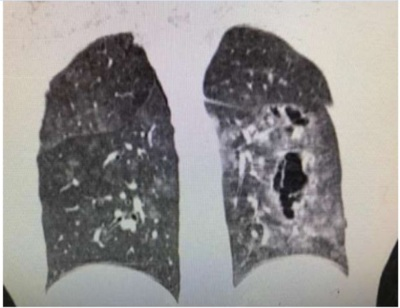
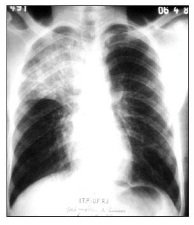
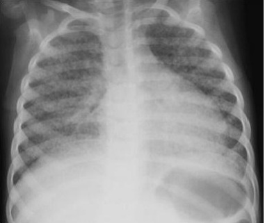

Questão 1 · Inf ecção latente pelo Mycobacterium tuberculosis ILTB · 4000128154""Estima-se que ¼ da população mundial esteja infectada pelo Mycobacterium tuberculosis, agente causador da tuberculose (TB). Em 2015, a Organização Mundial da Saúde (OMS) publicou a Estratégia pelo Fim da Tuberculose (End TB Strategy), que estabelece metas arrojadas para o m da TB como problema de saúde pública até 2035. De acordo com a OMS, para o alcance dessas metas, é imprescindível aumentar o rastreio, diagnóstico e o tratamento da infecção latente pelo Mycobacterium tuberculosis, reduzindo o risco de adoecimento e, consequentemente, evitando a contaminação. Quanto maior o número de Unidades Básicas de Saúde (UBS) e de pro ssionais capacitados desenvolvendo ações de controle da TB, mais abrangente serão as atividades voltadas ao alcance das metas."" BRASIL, Ministério da Saúde. Secretário de Vigilância em Saúde, Departamento de Vigilância das Doenças Transmissíveis, Protocolo de vigilância da infecção pelo Mycobacterium tuberculosis no Brasil/Ministério da Saúde, Brasília 2018. A investigação para tuberculose latente está indicada em várias condições de exposição. Entre os indivíduos listados, identi que o paciente no qual os testes para investigação da TB latente são dispensáveis, passando-se diretamente para a quimioprofilaxia.
A Paciente portador de HIV.
B Profissional de saúde exposto.
C Paciente com imunossupressão.
D Recém-nascido de mãe com TB ativa.
Questão 2 · Inf ecção latente pelo Mycobacterium tuberculosis ILTB · 4000128152""Estima-se que ¼ da população mundial esteja infectada pelo Mycobacterium tuberculosis, agente causador da tuberculose (TB). Em 2015, a Organização Mundial da Saúde (OMS) publicou a Estratégia pelo Fim da Tuberculose (End TB Strategy), que estabelece metas arrojadas para o m da TB como problema de saúde pública até 2035. De acordo com a OMS, para o alcance dessas metas, é imprescindível aumentar o rastreio, diagnóstico e o tratamento da infecção latente pelo Mycobacterium tuberculosis, reduzindo o risco de adoecimento e, consequentemente, evitando a contaminação. Quanto maior o número de Unidades Básicas de Saúde (UBS) e de pro ssionais capacitados desenvolvendo ações de controle da TB, mais abrangente serão as atividades voltadas ao alcance das metas."" BRASIL, Ministério da Saúde. Secretário de Vigilância em Saúde, Departamento de Vigilância das Doenças Transmissíveis, Protocolo de vigilância da infecção pelo Mycobacterium tuberculosis no Brasil/Ministério da Saúde, Brasília 2018. Adolescente, 17 anos de idade, contactante de paciente com tuberculose pulmonar bacilífera, apresenta teste tuberculínico com induração de 5mm. O adolescente fez uso de BCG na infância e é HIV negativo. Está assintomático e tem RX de tórax normal. Esse paciente deve ser considerado:
A Portador de imunidade conferida pelo BCG, com menos risco de contágio, sem indicação para seguimento.
B Indeterminado do ponto de vista clínico/epidemiológico, com indicação para seguimento clínico sem tratamento.
C Portador de tuberculose latente com risco de desenvolver tuberculose ativa nos próximos dois anos.
D Portador de tuberculose latente e com indicação para tratamento prioritário com rifampicina.
Questão 3 · Diagnóstico · 4000127741Paciente do sexo feminino, 30 anos, privada de liberdade há 4 meses, foi admitida em Unidade Hospitalar com quadro de emagrecimento de 9Kg em 2 meses, seguido de dor abdominal, acolia fecal e colúria há três semanas e, recente apresentação de dispnéia. Ao exame físico apresentava-se em regular estado geral, dispneica, ictérica +/4+, acianótica, febril e hipocorada; PA: 90 X 60 mmHg; FC: 120 bpm; FR: 26 ipm; T°C: 38,8°C. O exame do pescoço revelou adenomegalia de +/-1,5 a 2,0 cm em cadeia cervical anterior à direita, de consistência borrachóide, não aderidos e dolorosos. Pulmões apresentavam roncos esparsos, crepitações inspiratórias nas difusas; o precórdio apresentava ritmo cardíaco regular em dois tempos, taquicardia e ausência de sopros ou desdobramentos. O abdome estava escavado, tenso, doloroso à palpação de hipocôndrio direito e o fígado palpável a 4 cm do rebordo costal direito; o espaço de Traube estava ocupado e os ruídos hidro-aéreos presentes. As extremidades inferiores apresentavam edema de +/4+. A hipótese diagnóstica de tuberculose foi considerada e o médico assistente optou por:
A Realizar pesquisa de tuberculose por meio do teste rápido molecular em escarro, escarro induzido, gânglio linfático, fígado e sangue.
B Não realizar baciloscopia de materiais biológicos extrapulmonares por apresentar baixa positividade.
C Realizar cultura específica em novas amostras de secreção respiratória caso a pesquisa de tuberculose por meio do teste rápido molecular com triagem de cepas resistentes a Rifampicina resulte positiva.
D Realizar baciloscopia e cultura especifica com identificação de espécie e antibiograma em amostra respiratória para garantir controle e adequação do tratamento.
Questão 4 · HIVAIDS · 4000125760Paciente com diagnóstico confirmado de infecção pelo vírus HIV há 4 anos, referia ter interrompido o uso contínuo dos antirretrovirais (ARTs) no ano passado, vindo a apresentar tuberculose pulmonar diagnosticada através do teste rápido molecular (TRMTB) e exame radiológico pulmonar, terminou o tratamento há 1 mês. Considerando o caso desse paciente, é correto afirmar que
A o tratamento para a infecção pelo HIV e para a tuberculose deve sempre ser iniciado simultaneamente.
B o paciente deve ter o acompanhamento da resposta ao tratamento através do examede baciloscopia.
C o paciente deve ser submetido ao teste de genotipagem para o HIV e para o
D o paciente veio a manifestar tuberculose ativa como consequência de falha virológicae terapêutica.
E o paciente deve realizar o teste de liberação de interferon-gama (IGRAs), paraconfirmação diagnóstica.
Questão 5 · Tratamento · Diagnóstico da inf ecção latente pelo Mycobacterium tuberculosis · 4000120036Uma paciente de sessenta anos de idade encontra-se em tratamento de artrite reumatoide, com programação de receber medicação imunobiológica. Realizou, a pedido do médico reumatologista, a prova tuberculínica (PPD), cujo resultado reator foi de 12 mm. Diante do resultado, ouviu de uma pessoa estranha que estava sentada na sala de espera e tinha PPD reator no antebraço que ela estava com tuberculose, precisaria de car isolada e teria de tomar quatro remédios por seis meses. Mesmo estando assintomática, sem tosse, sem expectoração, afebril e sem perda ponderal e tendo realizado radiogra a de tórax recente, sem alterações pulmonares, cou preocupada e procurou atendimento. Com base nesse caso hipotético, assinale a alternativa correta quanto à análise do quadro e à conduta adequada a ser tomada para a paciente.
A Deve permanecer em isolamento respiratório e iniciar tratamento, com duração de seis meses, para tuberculose doença, com rifampicina, isoniazida, pirazinamida e etambutol (RIPE).
B Deve iniciar tratamento de tuberculose doença com RIPE, por ter PPD forte reator, porém não necessita de permanecer em isolamento.
C Deve iniciar tratamento para infecção latente pelo
D Deve iniciar tratamento para infecção latente, com duração de nove meses, pelo
E Deve iniciar o tratamento para infecção latente pelo M. tuberculosis, com duração de seis meses, com isoniazida e manter o isolamento respiratório.
Questão 6 · Tuberculose · Tuberculose pulmonar · Sistema de Pontuação · 4000119692Menino com cinco anos de idade apresenta quadro de febre, adinamia e tosse há três semanas, foi solicitado RX do tórax que evidenciou condensação perihilar, adenomegalia hilar e prova tuberculínica entre 5-9 mm. Após 14 dias de antibioticoterapia o quadro clínico e o quadro radiológico mantiveram-se sem alteração e a criança apresenta peso abaixo do P10. Diante desses dados qual alternativa apresenta possibilidade mais adequada para condução desse quadro?
A Diagnóstico pouco provável - prova tuberculínica < 10 mm (escore < 25).
B Solicitar lavado gástrico (escore entre 25-30).
C Diagnóstico muito provável. Aguardar baciloscopia para iniciar tratamento.
D Iniciar tratamento para tuberculose, diagnóstico muito provável (escore ≥ 40).
Questão 7 · Prevenção · 4000119523Com relação a prevenção da tuberculose: I - A principal maneira de prevenir a tuberculose em crianças é com a vacina BCG que as protege das formas mais graves da doença, como a tuberculose miliar e a meníngea. II - A avaliação de contatos de pessoas com tuberculose possibilita identi car indivíduos com infecção latente pelo Mycobacterium tuberculosis, III - A manutenção de ambientes bem ventilados e com entrada da luz solar é uma maneira de prevenção pois o bacilo é sensível à luz solar, e a circulação de ar possibilita a dispersão de partículas infectantes diminuindo o risco de transmissão. Está(ão) correta(s) a(s) afirmativa(s)
A Apenas as assertivas I, II e III estão corretas.
B Apenas a assertiva I está correta.
C Apenas as assertivas I e II estão corretas.
D Apenas as assertivas II e III estão corretas.
Questão 8 · Inf ecção latente pelo Mycobacterium tuberculosis ILTB · 4000117626Considerando as notas técnicas e recomendações atuais do Ministério da Saúde do Brasil, em qual das situações abaixo estaria formalmente indicado o tratamento da infecção latente pelo Mycobacterium tuberculosis?
A Homem de 35 anos, com diagnóstico sorológico recente de infecção pelo HIV, CD4 de 420 células/mm3 e PPD 3 mm, com radiografia de tórax normal e sem história de contato prévio com pessoas portadores de tuberculose bacilífera.
B Mulher assintomática com diagnóstico de AIDS, CD4 de 122 células/mm3, com radiografia de tórax normal, cujo parceiro sexual e um filho com quem mora estão com tuberculose pulmonar bacilífera.
C Portadora de Lupus Eritematoso Sistêmico, com PPD de 14 mm e Tomografia de tórax mostrando áreas de “árvore em brotamento” em Lobo Inferior do pulmão esquerdo.
D Presidiário com Radiografia de tórax mostrando múltiplas cavitações e sinais de disseminação broncogênica.
E Homem de 29 anos, hígido e assintomático, com Radiografia de tórax normal e PPD arreator, contactante de paciente com tuberculose pulmonar bacilifero.
Questão 9 · Seguimento do tratamento · Vacinação · Prevenção · 4000110447Considerando os objetivos do desenvolvimento sustentável da OMS, além da vacinação com BCG, quais das seguintes ações programáticas são propostas como estratégias para melhoria dos indicadores de saúde para a tuberculose?
A Tratar sintomáticos respiratórios.
B Tratar a infecção latente para todos os contatos.
C Confirmar cura dos casos.
D Tratar reatores ao teste tuberculínico.
Questão 10 · Esquema básico RIPE RHZE · 4000108683Em relação ao tratamento prolongado da tuberculose o fundamento do uso de múltiplas drogas deve:
A evitar resistência do bacilo.
B diminuir a chance de doença progressiva.
C prevenir toxicidade.
D prevenir a infecção latente.
Questão 11 · Tuberculose · Tuberculose TB · Tuberculose Latente · 4000103746Pré-escolar, de 4 anos, sexo masculino, vem à consulta pois seu pai, dependente de álcool, foi recentemente diagnosticado com tuberculose pulmonar e está em tratamento há cerca de duas semanas. A criança é eutró ca, não se queixa de nada e, no interrogatório sobre os diversos aparelhos, nega tosse. A radiogra a de tórax é normal e o teste tuberculínico realizado foi de 8 mm. A criança foi vacinada com BCG ao nascimento. Qual a conduta mais adequada?
A iniciar tratamento para tuberculose com esquema tríplice.
B repetir a prova tuberculínica após 8 semanas para avaliar viragem.
C encerrar o caso e dar alta ao paciente.
D tratar infecção latente com isoniazida.
Revisar: possível letra faltando em enunciado
Questão 12 · Teste rápido molecular · 4000103462O Teste Rápido Molecular para Tuberculose (TRM-TB) encontra-se disponível na rede pública de saúde em alguns municípios brasileiros. O resultado é possível em cerca de duas horas com apenas uma amostra de escarro indicando a presença de positividade a M. tuberculosis, e ainda a detecção de resistência a Rifampicina. O Manual de Recomendações para o Controle da Tuberculose no Brasil indica o TRM-TB para as seguintes situações:
A Diagnóstico de casos novos de tuberculose em crianças menores de 6 anos, gestantes e pacientes HIV+.
B Tuberculose extrapulmonar (osteoarticular, meníngea, ganglionar, urinária) em adultos e adolescentes.
C Todas as formas de tuberculose em grupos de maior vulnerabilidade de qualquer faixa etária.
D Diagnóstico de casos novos de tuberculose pulmonar e laríngea (principalmente) em adultos e adolescentes.
Questão 13 · Inf ecção latente pelo Mycobacterium tuberculosis ILTB · 4000100588Escolar, 08 anos, previamente hígido, com cartão vacinal atualizado, é levado à consulta porque sua mãe recebeu, há 06 dias, o diagnóstico de tuberculose pulmonar bacilífera e já se encontra em tratamento adequado. O menor não apresenta sintomas, o resultado da radiogra a de tórax é normal e a prova tuberculínica é de 06mm. Qual a conduta MAIS adequada para o caso?
A Repetir a prova tuberculínica em 8 semanas para avaliar viragem.
B Iniciar tratamento da infecção latente com Isoniazida e manter no mínimo por 06 meses.
C Observar clinicamente o aparecimento de sintomas e repetir radiografia em 02 meses.
D Observar clinicamente e repetir a radiografia e prova tuberculínica em 06 meses.
Questão 14 · Vacinação · Indicações · Avaliação dos contatos · 4000095240Com relação a prevenção da tuberculose: I - A principal maneira de prevenir a tuberculose em crianças é com a vacina BCG que as protege das formas mais graves da doença, como a tuberculose miliar e a meníngea. II - A avaliação de contatos de pessoas com tuberculose possibilita identi car indivíduos com infecção latente pelo Mycobacterium tuberculosis, que por sua vez permite prevenir o desenvolvimento de tuberculose ativa. III - A manutenção de ambientes bem ventilados e com entrada da luz solar é uma maneira de prevenção pois o bacilo é sensível à luz solar, e a circulação de ar possibilita a dispersão de partículas infectantes diminuindo o risco de transmissão. Está(ão) correta(s) a(s) afirmativa(s)
A Apenas as assertivas I, II e III estão corretas.
B Apenas a assertiva I está correta.
C Apenas as assertivas I e II estão corretas.
D Apenas as assertivas II e III estão corretas.
Questão 15 · Gestantes · 4000082704A tuberculose (TB) também é prevalente em gestantes. Portanto, o cuidado pré-natal apresenta uma oportunidade única para avaliação e manejo da tuberculose latente e ativa entre indivíduos com risco de tuberculose. Sobre a tuberculose na gestação, analise as afirmativas a seguir: I - A história natural da tuberculose é modi cada pela gestação, sendo muito mais grave na gestante do que na população em geral. II - A gestação representa um fator de risco para reativação de infecção latente, o que justi ca o rastreio desta para todas as gestantes. III - A TB ativa materna pode estar associada à infecção congênita por disseminação hematogênica via placenta, embora essa ocorrência seja rara. IV - O tratamento para TB gestacional é o mesmo recomendado para a população em geral, com especial atenção ao monitoramento das reações adversas. Estão corretas apenas as afirmativas
A II e III.
B I e II.
C III e IV.
D I e IV.
Revisar: possível letra faltando em enunciado
Questão 16 · Clínica Médica · Tuberculose TB · Inf ectologia · 4000077651Sobre o tratamento da tuberculose, é INCORRETO afirmar o seguinte:
A a hospitalização está indicada em casos de vulnerabilidade social.
B o tratamento da lactante é compatível com a amamentação.
C em gestantes, a associação de piridoxina reduz o risco de neurotoxicidade fetal.
D a tratamento em pessoas vivendo com HIV deve ter maior duração.
E evolução clínica insatisfatória pode motivar extensão da fase de manutenção.
Questão 17 · Clínica Médica · Tuberculose TB · Inf ectologia · 4000077633Assinale a opção correta acerca da tuberculose.
A A tuberculose pulmonar é a forma mais relevante devido ao pior prognóstico.
B Todo paciente com diagnóstico de tuberculose deve ser testado para HIV.
C A tuberculose miliar é mais comum em indivíduos previamente hígidos.
D Em adultos, na fase intensiva do tratamento são utilizadas duas drogas.
E Tratamento da tuberculose pulmonar deve ser realizado na atenção secundária.
Questão 18 · Diagnóstico · 4000076462Mulher de 56 anos vem à consulta ambulatorial com diarreia crônica atribuída à doença de Crohn. Apresenta inapetência, emagrecimento de 5kg nos últimos 30 dias, sem modi cação no quadro abdominal. Nega febre, sudorese, mas apresenta tosse produtiva com escarro amarelado. Os sinais vitais encontram-se na faixa da normalidade, com IMC = 23kg/m² e temperatura axilar = 37,5°C. Faz uso de inibidor do fator de necrose tumoral in iximabe e o imunossupressor azatioprina. No exame físico, havia um sopro pancardíaco ++/4 sem irradiação; no aparelho respiratório, havia crepitações em ápice e terço médio do pulmão direito. Visando ao diagnóstico para o caso, a melhor conduta inicial é realizar:
A PPD e pesquisa direta de adenosina deaminase no escarro
B exame de imagem do tórax e broncoscopia com colheita de material
C exame de imagem do tórax e geneXpert do escarro para tuberculose
D PPD e lavado broncoalveolar com Gram, BAAR e cultura da secreção
Questão 19 · Tratamento · Diagnóstico da inf ecção latente pelo Mycobacterium tuberculosis · 4000063382Homem de 68 anos, portador de tuberculose pulmonar bacilífera, em início de tratamento, tem como contatos: a esposa de 66 anos, portadora de diabetes mellitus e uma neta de 9 anos. Ambas negam queixas respiratórias e têm radiogra as de tórax normais. A neta recebeu BCG-ID ao nascer. O teste tuberculínico da esposa é de 8 mm e da neta, de 6 mm. Segundo orientação do Ministério da Saúde, a introdução do tratamento para infecção latente por tuberculose (ILTB)
A deve ser feita apenas para a esposa.
B deve ser feita para a esposa e para a neta.
C não deve ser feita para a esposa nem para a neta.
D Deve ser repetido o PPD
E deve ser feita apenas para a neta.
Questão 20 · Cultura para micobactéria · 4000054375Em pacientes com quadro clínico-radiológico de tuberculose pulmonar e BAAR positivo no escarro. Quando se indica cultura de escarro com identificação do agente e teste de sensibilidade (antiobiograma)?
A Na persistência de tosse produtiva até depois do segundo mês de tratamento.
B Nos pacientes com antecedentes de tratamento prévio, independentemente do tempo percorrido até a atual situação.
C Nos pacientes que iniciam com hemoptise após o segundo mês de tratamento.
D Na persistência de anorexia, emagrecimento apesar de ingerir corretamente a medicação.
E Na simples identificação de contato (do mesmo domicílio também portador de tuberculose.
Questão 21 · Esquema básico RIPE RHZE · 4000039114A atuação dos medicamentos anti TB difere conforme o metabolismo bacilar. Sendo adequado que:
A Na população intramacrofágica, agem os fármacos que melhor se difundem no meio intracelular e em pH ácido: rifampicina, pirazinamida e etambutol.
B Na população intramacrofágica, agem os fármacos que pior se difundem no meio intracelular e em pH ácido: rifampicina, pirazinamida e etambutol.
C Na população intramacrofágica, agem os fármacos que melhor se difundem no meio extracelular e em pH ácido: rifampicina, pirazinamida e etambutol.
D Na população intramacrofágica, agem os fármacos que melhor se difundem no meio intracelular e em pH básico: rifampicina, pirazinamida e etambutol.
Questão 22 · Tratamento · 4000038890Nas lesões caseosas fechadas, o fármaco mais efetivo é a rifampicina, sendo a ação da isoniazida mais lenta e demorada. Nesse contexto, está correto que:
A Na lesão cavitária, a rifampicina, isoniazida e estreptomicina não são muito efetivas e atuam em pH neutro.
B Na lesão cavitária, a rifampicina, isoniazida e estreptomicina são muito efetivas e atuam em pH ácido.
C Na lesão cavitária, a rifampicina, isoniazida e estreptomicina são pouco efetivas e atuam em pH neutro.
D Na lesão cavitária, a rifampicina, isoniazida e estreptomicina são muito efetivas e atuam em pH neutro.
Questão 23 · Pneumonia adquirida na comunidade PAC · Tuberculose · Tuberculose TB · 4000036683Adolescente, 12 anos de idade, é internada com quadro de febre de 37,8 °C a 38,3 °C, dor torácica, tosse seca, pouca intensidade, há dez dias. Estava em uso de amoxacilina, no quinto dia, para tratamento de uma pneumonia, porém sem imagem radiológica. O tratamento foi instituído com dados apenas clínicos. A adolescente relata que uma colega de turma esteve afastada devido a uma pneumonia. O exame físico revelou adolescente com regular estado geral, acianótica, ausência de linfadenopatia palpável, hidratada, com 30 irpm, murmúrio diminuído nos dois terços inferiores do hemitórax direito. Raio X de tórax com opacidade em hemitórax direito com obliteração do seio costofrênico. Ultrassonogra a do tórax mostrando condensação com presença de derrame pleural à direita. Em relação ao caso apresentado, é correto afirmar que se trata de um caso
A suspeito de tuberculose e deve-se realizar PPD coleta de líquido pleural para teste rápido Gene Xpert-MTB/RIF, cultura líquida em meio especifico; escore do Ministério da Saúde maior ou igual a 40 recomenda iniciar tratamento.
B suspeito de tuberculose e deve-se realizar coleta de líquido para cultura em meio específico, aguardar resultado e iniciar esquema tríplice se resultado positivo.
C típico de uma pneumonia atípica com derrame pleural, deve-se iniciar claritromicina e realizar drenagem torácica.
D de uma pneumonia comunitária complicada com derrame pleural de provável etiologia pneumocócica resistente a penicilina; deve ser iniciada ceftriaxona.
Questão 24 · Tratamento em populações especiais · 4000036149A respeito do manejo da tuberculose em pacientes com outras comorbidades, é correto afirmar que:
A quando se estabelece o diagnóstico simultâneo de SIDA e tuberculose, recomenda-se iniciar primeiramente o tratamento antirretroviral, e após 15 dias, o tratamento específico para tuberculose, por conta do risco de síndrome de reconstituição imune
B em pacientes com diabetes melittus, a tuberculose costuma fugir do padrão radiológico clássico, tem maior probabilidade de localização basal, bilateral, e tem cavitações frequentes
C nos pacientes com cirrose e tuberculose, o tratamento indicado não difere daqueles pacientes sem esta doença hepática
D em pacientes com diabetes melittus e tuberculose, o controle glicêmico tem metas menos rigorosas
Questão 25 · Tuberculose pulmonar secundária · Diagnóstico · 4000032393Paciente do sexo masculino com 21 anos dá entrada no setor de emergência após 3 horas de um acidente automobilístico é submetido a tomogra a de tórax em decorrência de dor torácica. Com base na imagem radiológica, qual hipótese diagnóstica mais provável:

A Contusão pulmonar
B Pneumatocele
C Tuberculose pulmonar
D Carcinoma de pequenas células
Questão 26 · Epidemiologia · Tuberculose extrapulmonar · Tuberculose ganglionar · 4000032143Sobre tuberculose na pediatria, selecione a opção que corresponde à forma clínica extrapulmonar mais comum.
A Ganglionar
B Meníngea
C Óssea
D Renal
E Miliar
Questão 27 · Controle dos comunicantes · Vacinação · Exame de Imagem · 4000031397Casal que está em tratamento para tuberculose pulmonar há 30 dias leva ao posto de saúde seu lho de cinco anos para investigação. O menino tem a marca vacinal da BCG, está assintomático, sua radiografia de tórax apresenta resultado normal e teste tuberculínico de 12mm. Baseando-se no Manual de Recomendações para o Controle da Tuberculose no Brasil, do Ministério da Saúde, em relação ao menino, deve-se:
A Considerar infecção latente por tuberculose e fazer isoniazida durante seis meses.
B Considerar tuberculose ativa e fazer esquema tríplice durante seis meses.
C Considerar vacinado e repetir prova tuberculinica em oito semanas.
D Considerar não infectado e observar clinicamente e revê-lo em oito semanas.
Questão 28 · Tratamento · 4000031089No tratamento da tuberculose, devido ao uso da isoniazida, recomenda-se reposição de:
A Ácido fólico
B Vitamina B1
C Vitamina B6
D Sulfato ferroso
E Vitamina D
Questão 29 · Baciloscopia · Tuberculose pulmonar · 4000024291Uma paciente de 58 anos de idade, hipertensa, com história de mau controle, obesidade grau 1, dislipidêmica, tabagista 40 anos/maços, com histórico de participação sem sucesso em programa de abandono ao tabagismo, é atendida em consulta de acolhimento em Unidade de Saúde da Família, após dois anos da última consulta agendada. Alega que procura atendimento em razão da dor de intensidade grau quatro em hemitórax anterior esquerdo há dois dias, contínua, sem irradiações, realizando ""sinal do apontamento"" para demonstrar local exato da dor, sem fator gatilho ou fator de piora notados. Além disso, relata que vem apresentando tosse não produtiva frequente há um mês, sem febre, dispneia, emagrecimento ou demais comemorativos. Não vem fazendo uso das respectivas medicações, alegando que se esquece de administrá-las. Leva boletim de atendimento em consulta realizada há duas semanas em unidade de pronto atendimento em razão da dor lombar, mostrando receita de corticoide intramuscular fornecida na alta, medicação da qual admite fazer uso com certa frequência, a rmando que esta sempre lhe é prescrita quando consulta na UPA. Mostra também exames realizados, há dois meses, solicitados em consulta médica em clínica popular, com os seguintes resultados: Hb = 13,2 g/dL, Ht = 37,1%, leucócitos = 7,2 mil, plaquetas = 148 mil, Cr = 1,1 mg/dL, Ur = 42 mg/dL, colesterol total = 270 mg/dL, HDL = 38 mg/dL, LDL =192 mg/dL, triglicerídeos = 198 mg/dL e glicemia de jejum = 123 mg/dL. Com relação a esse caso clínico e tendo em vista os conhecimentos médicos correlatos, julgue o item a seguir. Há indicação de pesquisa de BAAR em pelo menos duas amostras de escarro, em razão de a paciente enquadrar-se nos critérios de sintomático respiratório.
A Certo.
B Errado.
Questão 30 · Tuberculose pulmonar primária · 4000022689A TB pulmonar primária normalmente ocorre em seguida ao primeiro contato do indivíduo com o bacilo e, por isso, é mais comum em crianças. Somente está errado o item:
A As manifestações clínicas podem ser insidiosas.
B Paciente apresentando-se irritadiço, com febre baixa, sudorese noturna e inapetência.
C O exame físico pode ser inexpressivo.
D Sempre a tosse está presente.
Questão 31 · Outras normativas do SUS e da Saúde em geral · Prevenção · 4000022582É necessário que, aliado ao fortalecimento das ações de saúde, haja também o incremento das ações de políticas de inclusão de proteção de direitos, como os programas sociais, para manter a tendência de queda da incidência e mortalidade por TB, bem como evitar o crescimento dos índices de abandono do tratamento na população pobre ou extremamente pobre.
A O sucesso futuro do controle da TB pode não depender do progresso em todas essas áreas, sendo fundamental enfrentar também a discriminação e o preconceito, a fim de eliminar barreiras e ampliar o acesso a bens e serviços públicos.
B O sucesso futuro do controle da TB pode depender do progresso em todas essas áreas, sendo irrelevante enfrentar também a discriminação e o preconceito, a fim de eliminar barreiras e ampliar o acesso a bens e serviços públicos.
C O sucesso futuro do controle da TB pode depender do progresso em todas essas áreas, sendo fundamental enfrentar também a discriminação e o preconceito, a fim de eliminar barreiras e ampliar o acesso a bens e serviços públicos.
D O sucesso futuro do controle da TB pode depender do progresso em todas essas áreas, sendo fundamental enfrentar também a discriminação e o preconceito, a fim de eliminar barreiras e reduzir o acesso a bens e serviços públicos.
Questão 32 · Tratamento · 4000022553Assinale a alternativa que não se caracteriza como um dos Princípios da Estratégia pelo Fim da Tuberculose:
A Proteção e promoção dos direitos humanos, éticos e de equidade.
B Adaptação da estratégia sem metas nos países, com colaboração no âmbito global.
C Forte envolvimento das organizações da sociedade civil e de base comunitária.
D Gestão e responsabilização do governo, com componentes de monitoramento e avaliação.
Questão 33 · Transmissão · Controle dos comunicantes · Manif estações Clínicas · 4000017434Escolar de 6 anos é internado em enfermaria para investigação de quadro respiratório. Apresenta redução do apetite, perda de peso e tosse persistente há mais de 2 semanas mesmo após uso de amoxicilina-clavulanato por 7 dias. A criança mora com o avô que também está tossindo há mais de 2 meses. Em relação à principal suspeita clínica do caso em questão, é CORRETO afirmar que:
A O diagnóstico pode ser feito através de um sistema de pontuação que leva em consideração dados clínicos, radiológicos e epidemiológicos.
B A prova tuberculínica não está indicada no caso, pois a vacina BCG feita ao nascimento pode ocasionar resultado falso-positivo.
C O tratamento consiste em 2 meses de rifampicina, isoniazida, pirazinamida e etambutol e 4 meses de rifampicina e isoniazida.
D A profilaxia com isoniazida deve ser iniciada para o avô da criança por se tratar de um caso de infecção latente pelo M. tuberculosis.
Questão 34 · Inf ecção latente pelo Mycobacterium tuberculosis ILTB · Patogênese · 4000013680Com relação às demandas de saúde na atenção primária à saúde (APS), relacionadas às doenças infecciosas e transmissíveis, julgue o item que se segue. A Organização Mundial da Saúde (OMS) estima que um quarto da população mundial tenha infecção latente por tuberculose (ILTB), condição em que a pessoa, mesmo infectada, permanece saudável por anos, com imunidade parcial ao bacilo, sem apresentar sintomas, mas com transmissibilidade baixa do bacilo.
A Certo.
B Errado.
Questão 35 · Outras normativas do SUS e da Saúde em geral · Prevenção · 4000011137Assinale a alternativa que não se caracteriza como um dos Princípios da Estratégia pelo Fim da Tuberculose:
A Proteção e promoção dos direitos humanos, éticos e de equidade.
B Adaptação da estratégia sem metas nos países, com colaboração no âmbito global.
C Forte envolvimento das organizações da sociedade civil e de base comunitária.
D Gestão e responsabilização do governo, com componentes de monitoramento e avaliação.
Questão 36 · Outras normativas do SUS e da Saúde em geral · Prevenção · 4000011093É necessário que, aliado ao fortalecimento das ações de saúde, haja também o incremento das ações de políticas de inclusão de proteção de direitos, como os programas sociais, para manter a tendência de queda da incidência e mortalidade por TB, bem como evitar o crescimento dos índices de abandono do tratamento na população pobre ou extremamente pobre.
A O sucesso futuro do controle da TB pode não depender do progresso em todas essas áreas, sendo fundamental enfrentar também a discriminação e o preconceito, a fim de eliminar barreiras e ampliar o acesso a bens e serviços públicos.
B O sucesso futuro do controle da TB pode depender do progresso em todas essas áreas, sendo irrelevante enfrentar também a discriminação e o preconceito, a fim de eliminar barreiras e ampliar o acesso a bens e serviços públicos.
C O sucesso futuro do controle da TB pode depender do progresso em todas essas áreas, sendo fundamental enfrentar também a discriminação e o preconceito, a fim de eliminar barreiras e ampliar o acesso a bens e serviços públicos.
D O sucesso futuro do controle da TB pode depender do progresso em todas essas áreas, sendo fundamental enfrentar também a discriminação e o preconceito, a fim de eliminar barreiras e reduzir o acesso a bens e serviços públicos.
Questão 37 · Diagnóstico · 4000004575Em paciente com suspeita de tuberculose pulmonar, assinale a alternativa correta:
A O teste rápido molecular para tuberculose é o método mais indicado para investigação de caso novo de tuberculose pulmonar na população geral.
B A pesquisa de bacilos álcool-ácido resistentes em duas amostras de escarro é o método de primeira escolha no diagnóstico de tuberculose pulmonar em populações vulneráveis como profissionais da saúde, pessoas que vivem com HIV/aids e população privada de liberdade;
C O teste rápido molecular para tuberculose é o método mais indicado para investigação de tuberculose ativa em paciente com vistas a retratamento de tuberculose pulmonar.
D A rifampicina é a droga de escolha para o tratamento infecção latente pelo Mycobacterium tuberculosis (ILTB em pessoas que vivem com HIV/aids em uso de inibidores da protease.
E Deve-se vacinar com BCG toda criança portadora de HIV acima dos cinco anos de idade.
Questão 38 · Patogênese · 4000004422O sistema esquelético alberga até 35% dos casos de tuberculose extrapulmonar. A alternativa que contém o sítio esquelético mais frequentemente afetado pela tuberculose é
A Fêmur.
B Escápula.
C Osso ilíaco.
D Coluna vertebral.
E Articulações interfalangianas distais.
Questão 39 · Tuberculose pulmonar · Tratamento · 4000004075Paciente de 67 anos, tabagista com quadro de tosse produtiva e febre não aferida, há dois dias. Relata que apresentou, há quatro meses, quadro de tosse com hemoptise e perda ponderal, associado a sudorese noturna. Diante da hipótese do quadro atual, mas levando em consideração seu histórico de quatro meses, assinale, a alternativa CORRETA que apresenta a classe de antibiótico que NÃO deve ser prescrita.
A Quinolonas.
B Macrolideos.
C Cefalosporinas.
D Penicilinas.
E Nenhuma das alternativas.
Questão 40 · Tuberculose TB · Determinação Social da SaúdeDeterminantes Sociais da Saúde DSS · 4000121601No município de São Paulo, a situação dos imigrantes bolivianos está intimamente ligada ao trabalho informal na indústria têxtil. A vulnerabilidade dessa população se fundamenta em precárias condições de vida e de trabalho e em barreiras encontradas para cuidados rotineiros com a saúde. Sendo assim, não é(são) outro(s) determinante(s) para a contração da tuberculose pulmonar nessa população
A os hábitos alimentares distintos, com consumo de pratos típicos, sem a higiene adequada.
B a má adesão às condutas terapêuticas.
C as chegadas recorrentes de novos imigrantes ao grupo.
D a carga horária de trabalho abusiva.
E a pobreza.
Questão 41 · HIVAIDS · Tuberculose · 4000121411Um paciente com tuberculose pulmonar diagnosticada e Aids, em uso de tenofovir, lamivudina, atazanavir, ritonavir e dolutegravir, esquema antirretroviral que se baseia em genotipagem, não podendo ser modi cado, deverá iniciar o tratamento da tuberculose. Com base nessa situação hipotética, assinale a alternativa que apresenta, respectivamente, a droga do esquema de tratamento de tuberculose de primeira escolha, a qual, devido à possível interação com antirretrovirais em uso, deverá ser substituída pela rifabutina, e a droga antirretroviral do esquema do paciente que causa essa interação.
A rifampicina e lamivudina
B isoniazida e dolutegravir
C isoniazida e tenofovir
D pirazinamida e atazanavir
E rifampicina e atazanavir
Revisar: possível letra faltando em enunciado
Questão 42 · Tratamento · Diagnóstico da inf ecção latente pelo Mycobacterium tuberculosis · 4000121050Homem de 65 anos, portador de diabetes mellitus, reside com sua neta de 24 anos, que iniciou tratamento há 10 dias para tuberculose pulmonar, com escarro positivo para BAAR – bacilos álcool-ácido resistentes (+++). Ele comparece à UBS, em consulta agendada para controle de contatos. Está assintomático, traz controle de hemoglicoteste de jejum abaixo de 100 mg/dL, radiogra a de tórax normal e teste Interferon Gamma Release Assay (IGRA) positivo. A conduta indicada para esse homem, de acordo com o Guia de Vigilância em Saúde, do Ministério da Saúde (2017), é
A não introduzir medicação e orientar retorno à UBS, caso apresente sintomas sugestivos de tuberculose.
B tratar infecção latente da tuberculose com isoniazida, em doses diárias, por 9 meses ou 270 doses.
C solicitar tomografia de tórax para afastar o diagnóstico de tuberculose doença.
D tratar infecção latente da tuberculose com rifampicina, em doses diárias, por 4 meses ou 120 doses.
Questão 43 · Tuberculose ganglionar · 4000116179Madalena, 41 anos, está sendo tratada com In iximabe para artrite reumatoide. Depois de seis meses de tratamento, ela desenvolveu febre persistente, perda ponderal e sudorese noturna levantando a suspeita de tuberculose. Assinale a alternativa que mostra a localização esperada deste quadro de tuberculose:
A Linfonodos cervicais e supraclaviculares
B Base e campo médio do pulmão
C Pleura
D Região apical do lobo superior do pulmão
E Miliar
Questão 44 · Transmissão · 4000114274Paciente, 68 anos de idade, etilista crônico, durante a investigação de quadro febril associado a dispneia e emagrecimento, apresenta os seguintes resultados de exames: pesquisa de bacilo álcool ácido resistente (pBAAR) no escarro = 3 amostras negativas; radiogra a de tórax com derrame pleural à direita; análise do líquido pleural com exsudato, elevação importante de Dosagem de Adenosina Deaminase (ADA) e pBAAR positiva. Considerando a principal hipótese diagnóstica, qual deve ser a orientação quanto ao isolamento do paciente?
A Isolamento em quarto privativo e uso de máscara cirúrgica pelo paciente e profissionais de saúde.
B Isolamento em quarto privativo e pressão de ar negativa, e uso de máscara N95 pelos profissionais de saúde.
C Não há necessidade de isolamento ou uso de máscara cirúrgica para o paciente e profissionais de saúde.
D Isolamento em quarto privativo ou com pacientes com mesmo agente etiológico e uso de máscara N95.
E Isolamento em quarto privativo e pressão de ar negativa; uso de máscara comum, avental e luvas não estéreis.
Questão 45 · Tuberculose TB · Tuberculose Latente · Tuberculose · 4000108248Nos casos de mães portadoras de tuberculose pulmonar recomenda-se que as mães não tratadas ou ainda bacilíferas (nas duas primeiras semanas após o início do tratamento) amamentem com o uso de máscaras e restrinjam o contato próximo com a criança por causa da transmissão potencial por meio das gotículas do trato respiratório. Neste caso, o recém- nascido deve receber isoniazida na dose de:
A 2 mg/ kg/dia por 3 meses.
B 5 mg/ kg/dia por 3 meses.
C 10 mg/ kg/dia por 3 meses.
D 14 mg/ kg/dia por 3 meses.
Questão 46 · HIVAIDS · Tuberculose · Esquema básico inicial · 4000108197A rifampicina deve fazer parte do esquema preferencial de tratamento para TB, pois possui e cácia e e ciência comprovadas e compõe esquema básico preconizado no Brasil. Quando da necessidade de uso da Rifabutina, apenas NÃO podemos aceitar que:
A sua substituição pela rifabutina deve ser criteriosa e individualizada. Considerando- se riscos e benefícios relacionados à estruturação do esquema antituberculose e a melhor opção de regime antirretroviral.
B A rifabutina está recomendada quando for necessário manter inibidor de protease associado ao ritonavir (IP/r), no esquema antirretroviral, o que em geral ocorre nas situações de intolerância, resistência ou contraindicação aos ITRNNs.
C A rifabutina é geralmente mal tolerada, seus efeitos adversos mais frequentes são exantema, intolerância gastrointestinal e neutropenia.
D A rifabutina está recomendada quando for necessário associar inibidor de protease associado ao ritonavir (IP/r), no esquema antirretroviral, o que em geral ocorre nas situações de intolerância, resistência ou contraindicação aos ITRNNs.
Questão 47 · HIVAIDS · 4000108179Quando a rifabutina fizer parte do esquema antituberculose, somente se mostra ERRADO o seguinte item:
A será necessário incluir as formulações dos demais medicamentos em separado: isoniazida.
B será necessário incluir as formulações dos demais medicamentos em separado: pirazinamida.
C será necessário incluir as formulações dos demais medicamentos em separado: etambutol.
D a vantagem dessa estratégia de tratamento é o menor número de cápsulas ou comprimidos do esquema terapêutico.
Questão 48 · HIVAIDS · Tuberculose · 4000108166Recomenda-se para tratamento de pessoas vivendo com HIV/AIDS PVHA com tuberculose ativa diversos cuidados referentes à TB- HIV, sendo INCORRETA uma das seguintes alternativas. Assinale-a.
A Esquema antituberculose com duração de seis meses e idealmente estruturado com rifampicina.
B TARV com inibidor da transcriptase reversa não análogo de nucleosídeo (ITRNN) de segunda geração, preferencialmente o efavirenz.
C Deve-se iniciar a TARV ainda nas primeiras oito semanas do tratamento da tuberculose.
D Quando a TB é diagnosticada em pacientes em uso de TARV, o esquema deve ser avaliado com atenção quanto a possíveis interações farmacocinéticas com o grupo das rifamicinas.
Questão 49 · Baciloscopia · 4000107732A pesquisa do bacilo álcool-ácido resistente (BAAR), pelo método de Ziehl-Nielsen, é uma técnica simples e de baixo custo, sendo a mais utilizada no diagnóstico da TB. A baciloscopia do escarro, quando executada corretamente, permite detectar a maioria dos casos pulmonares. Sendo INADEQUADO que:
A Nos casos em que houver indícios clínicos e radiológicos de tuberculose e as duas baciloscopias apresentarem resultado negativo, podem ser solicitadas amostras adicionais, conforme avaliação individual, além da solicitação de cultura.
B Outros espécimes clínicos podem ser utilizados para a investigação do M. tuberculosis, como urina, secreção purulenta de lesões sugestivas, lavados gástricos e brônquicos, escarro induzido, materiais de biópsia e de ressecção.
C Nos materiais para a investigação do M. tuberculosis, a sensibilidade da baciloscopia é bem menor do que no escarro e, por isso, a cultura nessas amostras é obrigatória.
D A PCR identifica material genético de microrganismos vivos ou mortos e está indicada para o acompanhamento do tratamento.
Questão 50 · Tuberculose · Tuberculose TB · Amamentação Aleitamento Materno · 4000104301Recém nascido de parto vaginal, à termo, idade gestacional de 39 semanas e cinco dias. A mãe está em tratamento de tuberculose forma pulmonar há um mês, com escarro negativo há três semanas. A amamentação ao seio deverá ser realizada:
A Utilizando máscara.
B Sem restrições.
C Após realizar a BCG.
D Após o recém-nascido iniciar isoniazida.
E A amamentação neste caso está contra indicada.
Questão 51 · Ef eitos adversos · 4000101788Sobre o tratamento na atenção primária de pacientes com tuberculose, existe a preocupação com os efeitos adversos em populações específicas. Sobre este tema, é correto afirmar que o uso de:
A Etambutol é contraindicado em crianças, por seu efeito oftalmo tóxico.
B Pirazinamida, em pessoas com diabetes, é contraindicado por ser hepatotóxico.
C Isoniazida, em pessoas vivendo com HIV, é contraindicado por ser nefrotóxico.
D Rifampicina em gestantes é contraindicado por seu efeito teratogênico.
Questão 52 · HIVAIDS · Tuberculose · 4000101774No cenário de prática da atenção primária, a escolha do tratamento inicial para pessoa com diagnóstico de coinfecção de tuberculose e HIV merece atenção devido os riscos de maior falha terapêutica e recidiva. Sobre a primeira abordagem farmacológica em pacientes sem sinais de imunodeficiência, podemos afirmar que deve-se iniciar o tratamento:
A Antirretroviral, no meio da fase intensiva do tratamento de tuberculose.
B Antirretroviral, duas semanas antes do tratamento de tuberculose.
C Antirretroviral, entre a fase intensiva e a de manutenção da tuberculose.
D Para tuberculose, junto com o tratamento antirretroviral.
Questão 53 · Seguimento do tratamento · 4000101756Seu próximo paciente é João, de 38 anos de idade, gerente de telemarketing, que procurou uma consulta hoje referindo tosse persistente há mais de 4 semanas, sudorese, febre ocasional e perda de peso que não sabe quanti car. Com base nas informações acima, assinale a alternativa correta:
A A tuberculose, doença causada pelo Mycobacterium tuberculosis, pode acometer umasérie de órgãos e/ou sistemas. A apresentação da tuberculose na forma pulmonar não é a mais frequente, mas é a mais relevante para a saúde pública, pois é a forma pulmonar, especialmente a bacilífera, a responsável pela manutenção da cadeia de transmissão da doença.
B Para todo caso de tuberculose (novo ou retratamento), não é necessário realizar otratamento diretamente observado, pois é possível predizer os casos que não irão aderir ao tratamento.
C É necessário construir um vínculo entre o doente e o profissional de saúde, bem comoentre o doente e o serviço de saúde. Torna-se também necessário remover as barreiras que impedem a adesão, utilizando estratégias de reabilitação social, melhora da autoestima, qualificação profissional e outras demandas sociais.
D Os casos bacilíferos são a principal fonte de disseminação da tuberculose. Adescoberta precoce por meio da busca ativa do Sintomático Respiratório não interfere na cadeia de transmissão, sendo somente necessário o tratamento oportuno.
Questão 54 · Tuberculose TB · Determinação Social da SaúdeDeterminantes Sociais da Saúde DSS · 4000098692Sobre a Tuberculose, assinale a alternativa CORRETA:
A A tuberculose não é uma doença de notificação compulsória.
B A cultura para micobactéria deve ser solicitada para todo caso de baciloscopia de escarro positiva, para avaliação de resistência bacteriana.
C Em caso de paciente tabagista com tosse há mais de 3 semanas e na ausência de febre vespertina, perda de peso e escarros hemoptoicos, deve-se descartar outras patologias pulmonares antes de solicitar baciloscopia de escarro.
D O fato de a tuberculose ter níveis decrescentes em países em desenvolvimento no período antes da descoberta da quimioterapia e da vacina contra a doença indica a forte relação desta com a condição socioeconômica da população.
Questão 55 · Tratamento · 4000091806Gestante de 18 semanas, sem antecedentes médicos significativos e sorologias de rotina no pré-natal negativas, apresenta tosse seca há dois meses, acompanhada de suores noturnos e mal-estar. O teste cutâneo de tuberculina (TCT) é negativo e uma das amostras do exame de escarro induzido mostrou o teste de ampli cação do ácido nucleico de tuberculosis De acordo com o Ministério da Saúde (Manual de Recomendações para Controle da Tuberculose no Brasil), é correto afirmar:
A A isoniazida não deve ser usada nesse caso, pois o risco de hepatite e neurotoxicidade na gestação ultrapassa o eventual benefício.
B Inicia-se o tratamento apenas com a rifampicina (categoria B), reservando o esquema com múltiplas drogas para o período após o parto.
C Indicam-se na fase inicial a rifampicina, isoniazida, pirazinamida e o etambutol (RHZE) por dois meses, seguidos de rifampicina e isoniazida por mais quatro meses (RH).
D Nesse caso, devemos orientar a gestante que após parto deve evitar a amamentação, devido ao risco de transmissão aérea e das medicações utilizadas.
E Como o quadro é latente (tosse seca e TCT negativo), indica-se apenas a isoniazida e a rifampicina, que devem ser mantidas por, pelo menos, seis meses.
Questão 56 · Tratamento · Diagnóstico da inf ecção latente pelo Mycobacterium tuberculosis · 4000081925Homem, 38 anos, em tratamento para doença de Crohn, vai iniciar o uso de in iximabe. Está em bom estado geral e o raio- x de tórax é normal. O teste tuberculínico apresentou induração de 8mm. Qual é a conduta adequada para este caso?
A Não associar qualquer tratamento adicional.
B Tratar com isoniazida.
C Tratar com rifampicina, isoniazida e etambutol.
D Acompanhar e repetir o teste tuberculínico em 90 dias.
Questão 57 · Inf ecção latente pelo Mycobacterium tuberculosis ILTB · 4000078474Pré-escolar com 3 anos de idade, vacinação em dia, é contato diário de paciente adulto com tuberculose pulmonar sensível ao esquema terapêutico de 1ª linha. Assintomático, realiza prova tuberculínica, com resultado de 6 mm e radiografia de tórax normal. A conduta adequada é:
A dar alta e orientação.
B tratar como infecção latente por tuberculose.
C tratar como tuberculose ativa.
D continuar a investigação.
E realizar outra prova tuberculínica.
Questão 58 · Tuberculose TB · Tuberculose extrapulmonar · 4000076381Em relação à tuberculose, assinale a alternativa ERRADA:
A Há um aumento da ocorrência de tuberculose entre os indivíduos HIV-positivos.
B As culturas de líquido pleural são positivas para M. tuberculosis em mais de 60% dos casos de tuberculose pleural.
C O paciente com tuberculose pulmonar tipicamente apresenta sintomas constitucionais de mal-estar, anorexia, perda de peso, febre e sudorese noturna lentamente progressivos. A tosse crônica é o sintoma pulmonar mais comum.
D A demonstração de bacilos álcool-ácido resistentes no esfregaço de escarro não estabelece o diagnóstico de M. tuberculosis, uma vez que as micobactérias não tuberculosas podem colonizar as vias aéreas e são cada vez mais reconhecidas como causadoras de doença clínica em pacientes com doença pulmonar estrutural subjacente.
E Indivíduos com tuberculose latente não têm doença ativa e não podem transmitir o organismo a outros.
Questão 59 · Tuberculose pericárdica · Etiologia · 4000066867No Brasil, a pericardite constritiva crônica é complicação frequente de que patologia:
A Pericardite viral.
B Infarto agudo do miocárdio.
C Osteoartrite.
D Tuberculose.
Questão 60 · Diagnóstico · 4000054579Assinale a alternativa correta sobre a tuberculose:
A O teste tuberculinico cutâneo demonstrando um resultado de reator forte é diagnóstico de tuberculose.
B A broncoscopia com lavado bronco alveolar tem o mesmo rendimento diagnóstico que a indução do escarro.
C A baciloscopia direta e a cultura do sedimento do escarro têm o mesmo rendimento que as amostras sem este tratamento.
D Micobactérias atípicas não são encontradas em pacientes imuno competentes.
Questão 61 · Teste rápido molecular · 4000048291Sobre o uso do teste rápido molecular (GeneXpert) para o diagnóstico da tuberculose, é INCORRETO afirmar que
A uma de suas principais vantagens é a rapidez de obtenção do diagnóstico.
B é exame útil no acompanhamento do tratamento, para a definição de cura bacteriológica.
C permite identificação de cepas com resistência à rifampicina.
D permite estabelecer o diagnóstico de tuberculose em alguns casos com esfregaço negativo para BAAR.
E oferece maior especificidade para o diagnóstico da tuberculose pulmonar que as outras técnicas disponíveis.
Questão 62 · Avaliação dos contatos · 4000043075Juca, 35 anos teve diagnostico de tuberculose pulmonar, ele reside com a mulher e 3 lhos menores de 10 anos. Fátima, a esposa, apresenta tosse há mais de 3 semanas. Considerando a família qual a conduta inicialmente recomendada é:
A Prova tuberculínica, teste rápido molecular para tuberculose (TB) e baciloscopia seriada do escarro
B Prova tuberculínica, teste rápido molecular para TB e radiografia do tórax para todos os residentes
C Prova tuberculínica para os filhos, para a esposa teste rápido molecular para TB e radiografia do tórax
D Avaliação clínica, prova tuberculínica e radiografia de tórax para todos os que residem na casa.
Questão 63 · Tuberculose Latente · Inf ecção latente pelo Mycobacterium tuberculosis ILTB · 4000039129Avaliação dos contatos Uma senhora, que está em tratamento de tuberculose pulmonar há 3 semanas, leva o lho de 4 anos ao pediatra para investigação clínica de contactantes porque assim foi orientada por seu médico. A criança está assintomática e apresenta marca da vacina BCG. O RX de toráx está normal e o PPD foi de 7 mm. De acordo com o Manual de Recomendações para o Controle da Tuberculose no Brasil e em relação à criança, marque a afirmativa correta.
A Está indicada isoniazida por 4 meses.
B Trata-se de tuberculose latente.
C A prova tuberculínica deve ser repetida em 2 meses.
D Deve-se acompanhar clinicamente a criança repetir o RX de toráx em 30 dias.
Questão 64 · Tratamento · 4000035642De acordo com a OMS em sua publicação “Estratégia pelo m da Tuberculose” de 2015, é imprescindível aumentar o rastreio, diagnóstico e tratamento da Infecção Latente pelo Mycobacterium tuberculosis (ILTB). Neste ano, 2018, o Ministério da Saúde do Brasil, publicou por meio do Programa Nacional de Controle da Tuberculose o protocolo de vigilância da ILTB do Brasil. Considerando o definido por esse protocolo, podemos afirmar que:
A A tuberculose ativa não exclui a ILTB concomitante.
B O tratamento da ILTB está indicado para recém-nascidos coabitantes de caso suspeito não confirmado laboratorialmente.
C O tratamento da ILTB está indicado para profissionais da área da saúde e trabalhadores de casas de longa permanência com prova tuberculínica com conversão (2ªPT com incremento de 10mm em relação à 1ª PT).
D O tratamento da ILTB está indicado para Portadores de Diabetes mellitus e/ou tabagistas com Prova tuberculínica = 5mm.
Questão 65 · Quimioprof ilaxia primária · Amamentação Aleitamento Materno · Prevenção · 4000034407Recém-nascido a termo, com peso de nascimento de 3.100 g. está no alojamento conjunto. Sua mãe recebeu diagnóstico recente de tuberculose pulmonar ainda sem tratamento. De acordo com as orientações do Ministério da Saúde do Brasil, assinale as condutas MAIS ADEQUADAS em relação ao aleitamento materno e cuidados com esse recém-nascido:
A Amamentar ao seio materno, com a mãe usando máscara, iniciar isoniazida e adiar a vacina BCG.
B Contraindicar o aleitamento materno, oferecer fórmula infantil, realizar teste tuberculínico e, se não reator, vacinar com BCG.
C Oferecer o leite materno pasteurizado por copo, vacinar com BCG de acordo com o calendário vacinal.
D Ordenhar leite materno e oferecê-lo por copo, iniciar isoniazida e vacinar com BC G concomitantemente.
Questão 66 · Quimioprof ilaxia primária · Vacinação · Tuberculose Latente · 4000028969Menor de três meses de idade com mãe no 5° mês de tratamento para tuberculose pulmonar. A criança está realizando quimiopro laxia com isoniazida e não foi vacinada com a BCG até o momento. A criança realizou teste de mantoux com 3 meses de idade, que resultou 8 milímetros. Tendo em conta as recomendações do Ministério da Saúde, qual medida deve ser adotada?
A Manutenção do tratamento com isoniazida por 6 meses e vacinar com BCG posteriormente.
B Orientar vacinação com BCG imediata e suspender quimioprofilaxia.
C Orientar vacinação com BCG imediata e manutenção do tratamento com isoniazida por 6 meses.
D Iniciar tratamento para tuberculose pulmonar e vacinar com BCG posteriormente.
E Não vacinar, suspender quimioprofilaxia e observar.
Questão 67 · HIVAIDS · Tratamento · 4000026567A tuberculose (TB) é a doença infecciosa de maior mortalidade entre as pessoas vivendo com HIV (PVHIV). Em 2015, registraram-se 10,4 milhões de casos de TB em todo o mundo, segundo a Organização Mundial da Saúde, sendo que, destes, 11% ocorreram em portadores de HIV. A estratégia de controle de coinfecção TB-HIV está pautada no diagnóstico precoce de ambas as afecções e na garantia de tratamento adequado para o paciente, de forma oportuna. No contexto apresentado:
A O teste rápido molecular é a atual metodologia indicada para o diagnóstico de tuberculose, porém ele não está validado para amostras extrapulmonares.
B As PVHIV têm de três a doze vezes mais chance de adoecer por TB que a população em geral. O tratamento de tuberculose latente está indicado aquelas com contagem de LT-CD4 < 350 céls/mm3, desde que descartada a doença ativa.
C O tratamento antirretroviral, em caso de coinfecção TB-HIV, deve ser instituído o mais precocemente possível, concomitante ao esquema anti-TB, independentemente do nível de LT-CD4.
D A genotipagem pré-tratamento do HIV está indicada e o esquema antirretroviral preferencial, para virgens de tratamento e coinfectados com tuberculose, é a associação de tenofovir + lamivudina + dolutegravir.
Questão 68 · Agente etiológico · Patogênese · 4000025552O complexo de Ghon está relacionado à seguinte patologia:
A sarcoidose.
B pneumonia por Pneumocystis carinii.
C aspergilose.
D tuberculose.
Questão 69 · Transmissão · Manif estações Clínicas · Busca ativa de sintomáticos respiratórios · 4000017929Um menino de 4 anos de idade foi encaminhado ao ambulatório de pediatria porque sua mãe havia sido recém- diagnosticada com tuberculose pulmonar, com tratamento iniciado havia 3 semanas. Na consulta, a criança apresentava sinais gripais com tosse seca e coriza hialina havia 10 dias, sem febre. O cartão vacinal estava completo e, no exame físico, foi constatada apenas a presença de coriza e de cicatriz de bacilo de Calmette- Guérin (BCG). O pediatra solicitou radiogra a de tórax e derivado proteico puri cado (PPD). O resultado da radiogra a foi normal, ao passo que o do PPD foi de 4mm. Com relação a esse caso clínico, julgue o item que se segue. A criança deve ser isolada dos outros familiares e afastada da escola, pelo risco de estar com tuberculose pulmonar, na forma bacilífera, que ocorre na sua faixa etária.
A Certo.
B Errado.
Revisar: possível letra faltando em enunciado
Questão 70 · Diagnóstico · 4000017928Adulto jovem, brasileiro, com história de tosse produtiva, febre irregular e astenia há 1 mês. Fez uso de amoxicilina no início do quadro sem melhora clínica. Realizou três baciloscopias, todas negativas para BAAR. Sua radiogra a de tórax em PA é mostrada abaixo. LEGENDA: BAAR: Bacilo Álcool-Ácido Resistente. Considerando que o paciente permanece com os mesmos sintomas, o exame mais indicado para confirmar o diagnóstico mais provável, neste momento seria:

A Broncoscopia.
B Escarro induzido.
C Cultura do escarro.
D Teste tuberculínico.
Questão 71 · Controle dos comunicantes · Vacinação · Tuberculose Latente · 4000017923Um menino de 4 anos de idade foi encaminhado ao ambulatório de pediatria porque sua mãe havia sido recém- diagnosticada com tuberculose pulmonar, com tratamento iniciado havia 3 semanas. Na consulta, a criança apresentava sinais gripais com tosse seca e coriza hialina havia 10 dias, sem febre. O cartão vacinal estava completo e, no exame físico, foi constatada apenas a presença de coriza e de cicatriz de bacilo de Calmette- Guérin (BCG). O pediatra solicitou radiogra a de tórax e derivado proteico puri cado (PPD). O resultado da radiogra a foi normal, ao passo que o do PPD foi de 4mm. Com relação a esse caso clínico, julgue o item que se segue. Considerando os sinais e sintomas respiratórios apresentados pela criança, deve-se iniciar o tratamento de tuberculose com o esquema RIPE (esquema 1 do Ministério da Saúde).
A Certo.
B Errado.
Revisar: possível letra faltando em enunciado
Questão 72 · Manif estações Clínicas · Vacinação · Exame de Imagem · 4000017921Um menino de 4 anos de idade foi encaminhado ao ambulatório de pediatria porque sua mãe havia sido recém- diagnosticada com tuberculose pulmonar, com tratamento iniciado havia 3 semanas. Na consulta, a criança apresentava sinais gripais com tosse seca e coriza hialina havia 10 dias, sem febre. O cartão vacinal estava completo e, no exame físico, foi constatada apenas a presença de coriza e de cicatriz de bacilo de Calmette- Guérin (BCG). O pediatra solicitou radiogra a de tórax e derivado proteico puri cado (PPD). O resultado da radiogra a foi normal, ao passo que o do PPD foi de 4mm. Com relação a esse caso clínico, julgue o item que se segue. A presença de cicatriz oriunda da vacinação com a BCG é um indicativo de que a criança está protegida das formas mais graves da tuberculose.
A Certo.
B Errado.
Revisar: possível letra faltando em enunciado
Questão 73 · Baciloscopia · Manif estações Clínicas · Vacinação · 4000017911Um menino de 4 anos de idade foi encaminhado ao ambulatório de pediatria porque sua mãe havia sido recém- diagnosticada com tuberculose pulmonar, com tratamento iniciado havia 3 semanas. Na consulta, a criança apresentava sinais gripais com tosse seca e coriza hialina havia 10 dias, sem febre. O cartão vacinal estava completo e, no exame físico, foi constatada apenas a presença de coriza e de cicatriz de bacilo de Calmette- Guérin (BCG). O pediatra solicitou radiogra a de tórax e derivado proteico puri cado (PPD). O resultado da radiogra a foi normal, ao passo que o do PPD foi de 4mm. Com relação a esse caso clínico, julgue o item que se segue. Deve ser solicitada uma baciloscopia do escarro para afastar o diagnóstico de tuberculose na referida criança.
A Certo.
B Errado.
Revisar: possível letra faltando em enunciado
Questão 74 · Manif estações Clínicas · Vacinação · Exame de Imagem · 4000017908Um menino de 4 anos de idade foi encaminhado ao ambulatório de pediatria porque sua mãe havia sido recém- diagnosticada com tuberculose pulmonar, com tratamento iniciado havia 3 semanas. Na consulta, a criança apresentava sinais gripais com tosse seca e coriza hialina havia 10 dias, sem febre. O cartão vacinal estava completo e, no exame físico, foi constatada apenas a presença de coriza e de cicatriz de bacilo de Calmette- Guérin (BCG). O pediatra solicitou radiogra a de tórax e derivado proteico puri cado (PPD). O resultado da radiogra a foi normal, ao passo que o do PPD foi de 4mm. Com relação a esse caso clínico, julgue o item que se segue. Diante dos resultados da radiogra a de tórax e PPD, é correto concluir que essa criança tem grande risco de apresentar tuberculose.
A Certo.
B Errado.
Revisar: possível letra faltando em enunciado
Questão 75 · Tuberculose TB · Prevenção · NR6 Equipamento de Proteção Individual · 4000016541Em relação à tuberculose, são medidas de controle ambiental e de proteção individual em serviços que atendam grande quantidade de pacientes bacilíferos, EXCETO:
A Deve-se manter o paciente suspeito de tuberculose pulmonar em isolamento respiratório, zelando para que seu tempo de permanência no setor seja o menor possível.
B É recomendado o uso de máscaras N95 para profissionais de saúde que tenham acesso às áreas de alto risco de transmissão em ambientes hospitalares.
C Aos profissionais do laboratório, não é recomenda a utilização de máscaras N95 durante a manipulação de materiais com suspeita de conter bacilos álcool-ácidos resistentes.
D No transporte de doentes bacilíferos ou suspeitos de TB pulmonar em ambulâncias, os profissionais devem utilizar máscaras do tipo N95 e os pacientes devem utilizar máscaras cirúrgicas comuns.
Questão 76 · Quadro clínico · 4000012425Doenças importantes a serem consideradas no diagnóstico diferencial da tuberculose, não são compatíveis com o seguinte item abaixo:
A Pneumonias, sarcoidose, Síndrome Respiratória Aguda Grave (SRAG), entre outras enfermidades, são doenças importantes a serem consideradas no diagnóstico diferencial da tuberculose.
B Além dessas doenças, sabe-se que as Micobactérias Não Tuberculosas (MNT) podem produzir quadros clínicos semelhantes ao da tuberculose, não sendo necessário, para o diagnóstico diferencial, realizar cultura com identificação de espécie.
C Foram identificadas mais de 150 espécies de MNT. Entre as consideradas patogênicas, são frequentes o Mycobacterium avium, o Mycobacterium kansasii e o Mycobacterium abscessos.
D As micoses pulmonares (paracoccidioidomicose, histoplasmose entre outras enfermidades, são doenças importantes a serem consideradas no diagnóstico diferencial da tuberculose.
Questão 77 · HIVAIDS · 4000012408A associação de tuberculose e infecção pelo HIV tem repercussões negativas na evolução das duas doenças, e de acordo com a Portaria do Ministério da Saúde, pela oportunidade do resultado, o teste rápido deverá ser priorizado para populações vulneráveis, incluindo os casos de tuberculose. Quanto a isso, está de acordo com o seguinte item:
A O diagnóstico tardio de infecção pelo HIV em portadores de tuberculose ativa e o início oportuno da terapia antirretroviral reduzem a mortalidade na coinfecção TB-HIV. Portanto, recomenda-se o teste para diagnóstico do HIV (rápido ou sorológico).
B O diagnóstico precoce de infecção pelo HIV em portadores de tuberculose ativa e o início oportuno da terapia antirretroviral não reduzem a mortalidade na coinfecção TB- HIV. Portanto, recomenda-se o teste para diagnóstico do HIV (rápido ou sorológico).
C O diagnóstico precoce de infecção pelo HIV em portadores de tuberculose ativa e o início oportuno da terapia antirretroviral não reduzem a mortalidade na coinfecção TB- HIV. Portanto, não é recomendado o teste para diagnóstico do HIV (rápido ou sorológico).
D O diagnóstico precoce de infecção pelo HIV em portadores de tuberculose ativa e o início oportuno da terapia antirretroviral reduzem a mortalidade na coinfecção TB-HIV. Portanto, recomenda-se o teste para diagnóstico do HIV (rápido ou sorológico).
Questão 78 · Tuberculose pulmonar secundária · Pneumologia · 4000011673A radiogra a de tórax é um método complementar importante na investigação da doença e deve ser solicitada para todo paciente com suspeita clínica de tuberculose pulmonar. Em casos raros, mesmo existindo a doença, a radiogra a do paciente pode não apresentar alterações. Sendo INADEQUADO que:
A Diferentes achados radiológicos apontam para a suspeita de doença em atividade ou anterior
B Existem diversas imagens radiológica patognomônicas de tuberculose.
C Sempre devem ser realizados exames laboratoriais comprobatórios.
D As principais funções do exame radiológico em pacientes com baciloscopia positiva são excluir outra doença pulmonar associada e avaliar a extensão do acometimento e sua evolução radiológica, sobretudo nos pacientes que não respondem ao tratamento antituberculose.
Questão 79 · Tratamento · 4000005848O tratamento da tuberculose sensível dura no mínimo 6 meses, desde o diagnóstico até sua alta. O estabelecimento de vínculo entre pro ssional de saúde e usuário auxilia tanto no diagnóstico como na adesão ao tratamento, sendo que o paciente deve ser orientado, de forma clara, quanto às características clínicas da tuberculose, bem como acerca de eventos adversos. Somente se mostrando INADEQUADO que:
A No regime de tratamento com isoniazida, o mais importante é somente o tempo de tratamento.
B Recomenda-se a utilização de, no mínimo, 270 doses com isoniazida, que poderão ser tomadas de 9 a 12 meses.
C Deve-se considerar a utilização de 180 doses com isoniazida, a serem tomadas entre 6 a 9 meses em casos individuais, após avaliação da adesão.
D Há evidências de que o uso de 270 doses com isoniazida protege mais do que o uso de 180 doses. Esforços devem ser feitos para que o paciente complete o total de doses programadas.
Questão 80 · Tratamento · 4000005831O tratamento diretamente observado (TDO) é uma estratégia recomendada para todas as pessoas com diagnóstico de tuberculose. Sendo INCORRETO que:
A Define-se como TDO a ingestão diária dos medicamentos antituberculose pelo paciente sob a observação direta de um profissional de saúde.
B O TDO deve ser realizado diariamente (de segunda a sexta-feira) ou, excepcionalmente, uma vez na semana.
C O local e o horário devem estar acordados com o paciente.
D Os medicamentos deverão ser ingeridos preferencialmente em jejum, uma vez ao dia, inclusive nos finais de semana e feriados.
Questão 81 · Tratamento · Diagnóstico da inf ecção latente pelo Mycobacterium tuberculosis · 4000005815Jovem de 15 anos de idade, HIV+ por transmissão vertical, mora com um tio que iniciou tratamento para tuberculose pulmonar há 10 dias. A jovem está com boa adesão ao esquema antirretroviral, com carga viral do HIV abaixo de 40 cópias/ml, assintomática e com radiogra a de tórax normal. Nunca fez qualquer tipo de tratamento para tuberculose anteriormente. A conduta mais adequada é?
A Se contagem de células T CD4+ estiver inferior a 200, iniciar tratamento para tuberculose doença, independente do resultado do teste tuberculínico.
B Se contagem de células T CD4+ estiver inferior a 500, iniciar tratamento para tuberculose latente, após afastar tuberculose doença.
C Se teste tuberculínico resultar maior que 10 mm, tratar como tuberculose doença, independentemente da contagem de células T CD4+.
D Afastado o diagnóstico de tuberculose doença, avaliar contagem de células T CD4+ e resultado do teste tuberculínico para iniciar tratamento de tuberculose latente.
E Observar aparecimento de sintomas de tuberculose doença e retorno em 30 dias para realizar teste tuberculínico e nova radiografia de tórax.
Questão 82 · Tratamento · 4000005797Paciente, 28 anos de idade, três meses de gestação, compareceu à consulta de pré- natal na Unidade Básica de Saúde queixando-se de tosse seca, sudorese e perda ponderal. Após avaliação médica e exames, confirmou diagnóstico de caso novo de tuberculose pulmonar bacilífera. Sorologia para HIV negativa. Qual a conduta mais adequada diante do exposto de acordo com Manual de Recomendações para o controle de Tuberculose no Brasil?
A Tratá-la com esquema especial RHZ até o final da gravidez, prorrogando-o por mais dois meses após o nascimento do bebê, quando se iniciará a segunda fase do tratamento.
B Iniciar o tratamento usando o esquema básico com RHZE, com redução das doses habituais em 50%, prorrogando-o por mais dois meses, na segunda fase do tratamento.
C Tratá-la com o esquema básico RHZE nas doses habituais, por seis meses, sendo recomendado o uso de Piridoxina (50mg/dia) durante a gestação pelo risco de toxicidade neurológica (devido à isoniazida) no recém- nascido.
D Encaminhar a paciente para uma unidade de referência terciária, a fim de iniciar o tratamento, usando esquema com RHZ por seis meses.
E Iniciar tratamento com esquema básico RHZE e solicitar cultura.
Questão 83 · Tratamento · 4000127499O tuberculostático que mais frequentemente pode ocasionar neuropatia periférica como efeito adverso é:
A Pirazinamida.
B Ofloxacino.
C Estreptomicina.
D Rifampicina.
E Isoniazida.
Questão 84 · Tuberculose primária · 4000125370Em relação à tuberculose primária, é CORRETO afirmar que:
A Acima de 75% das radiografias de tórax apresentam anormalidades.
B A febre é o sintoma mais comum.
C Choque séptico é complicação rara e tem bom prognóstico.
D Pneumotórax, hemoptise maciça e co-infecção por Aspergillus sp são as três complicações mais frequentes.
E Derrame pleural é o achado radiográfico mais comum.
Revisar: possível letra faltando em alt D
Questão 85 · Tuberculose pericárdica · 4000108499Quanto ao diagnóstico de PTBC, Pericardite Tuberculosa, podemos considerar como inadequada a alternativa:
A O ecocardiograma é o melhor método para a confirmação da presença de derrame pericárdico.
B O diagnóstico é feito pela identificação do
C O diagnóstico não pode ser feito pela e/ou pela presença de granuloma caseoso no pericárdio.
D PTBC, o líquido pericárdico apresenta alta contagem de proteína e a contagem de leucócitos é altamente variável (700 a 54000/ml).
Questão 86 · Tuberculose pericárdica · 4000108454Podemos utilizar diversos métodos diagnósticos para confirmação de acometimento por tuberculose na serosa cardíaca, porém uma das alternativas se mostra equivocada:
A Também a especificidade do teste tuberculínico tem baixa predictabilidade em áreas onde há alta incidência de TBC.
B O teste tuberculínico realizado na pele pode ser falso negativo em 25–33% dos pacientes, e falso positivo em 30–40% em se tratando de pacientes idosos.
C A cultura do líquido pericárdico tem sensibilidade modesta e especificidade de 10%.
D A alta atividade da Adenosina Deaminase (ADA) é também diagnóstico, com uma alta sensibilidade e especificidade.
Questão 87 · Tuberculose TB · 4000101792Sobre o manejo da Tuberculose, assinale a alternativa INCORRETA:
A Toda pessoa classificada como Sintomático Respiratório (tosse a mais de 3 semanas) deve receber a investigação de tuberculose.
B Em Aracaju, o MS implantou o Teste Rápido para TB (teste molecular). Este teste quando positivo já sai com o resultado da SENSIBILIDADE para RIFAMPICINA (se for resistente deve ser encaminhado para a referência).
C Em casos de suspeita clínica e/ou radiológica de TB, mas com baciloscopia repetidamente negativa, não está indicada a cultura para micobactéria.
D A radiografia de tórax deve ser solicitada para toda pessoa com suspeita de tuberculose pulmonar.
Questão 88 · HIVAIDS · Ef eitos adversos · Diagnóstico · 4000088836Adulto de 45 anos, HIV positivo, é atendido em um serviço de saúde com tosse produtiva, perda de 8 kg em 6 semanas e febre vespertina. Ao exame físico, apresentava- se descorado, afebril, com frequência respiratória de 25 irpm, frequência cardíaca de 90 bpm e pressão arterial de 110x80 mmHg. À ausculta respiratória, ouvia-se roncos em ápice de pulmão esquerdo. Demais exames físicos sem alterações. A radiogra a de tórax revelou cavitação em ápice de pulmão esquerdo e a baciloscopia do escarro foi positiva. Tendo como base o exposto, considere as seguintes afirmativas: I- A cultura do escarro para micobactérias com identi cação e teste de sensibilidade está indicada apenas se não houver resposta ao tratamento inicial para tuberculose; II- O esquema antirretroviral (TARV) deve ser prescrito após 2 a 4 semanas do início dos tuberculostáticos, com o intuito de diminuir o risco da síndrome de reconstituição imune; III- A ocorrência de artralgias/artrites após o início do tratamento para tuberculose poderá ser atribuída ao uso da pirazinamida e/ou da isoniazida; IV- Nos pacientes coinfectados TB-HIV, o tratamento deve ser sempre realizado em ambiente hospitalar para que se obtenha maior eficácia. Em relação ao caso exposto, estão CORRETAS as afirmativas:
A I e IV.
B II e III.
C I e II.
D III e IV.
Questão 89 · Tuberculose urogenital · 4000087503Mulher de 28 anos, com diagnóstico de Lúpus Eritematoso Sistêmico há 1 ano, vinha em uso de Prednisona há 6 meses. Evoluindo nos últimos 2 meses com múltiplos episódios de infecção urinária. Em avaliação clínica, exame do sedimento urinário demonstrava nitrito negativo, proteinúria +, hematúria ++, além de piúria. Urinocultura sem crescimento bacteriano.Em exame de imagem, evidenciada deformidade em ureteres, com pontos de estenose e dilatações. Diante deste contexto clínico-radiológico, a principal hipótese e o melhor método diagnóstico são:
A Nefrite lúpica, biópsia renal.
B Nefrite lúpica, cintilografia renal.
C Tuberculose renal, pesquisa de BAAR na urina.
D Tuberculose renal, realização do este tuberculínico.
E Tuberculose renal, realização de cultura em urina para bacilo de Koch.
Questão 90 · HIVAIDS · Tuberculose · 4000083894Uma mulher de 29 anos iniciou tratamento para tuberculose pulmonar cavitária há duas semanas, com o esquema rifampicina + hidrazida + pirazinamida + etambutol. Durante a consulta para avaliação dos exames solicitados, o médico observa que o teste confirmatório para detecção do HIV é positivo. Nesse contexto, além do aconselhamento da paciente e testagem de parceiros, a conduta mais adequada para a paciente é:
A Manutenção do tratamento para tuberculose e encaminhamento para serviço de referência, mantendo o acompanhamento à paciente.
B Suspensão do tratamento para tuberculose e encaminhamento para serviço de referência, mantendo o acompanhamento à paciente.
C Suspensão temporária do esquema terapêutico para a tuberculose, início da terapia antirretroviral; retomada do tratamento para tuberculose após 30 dias.
D Alteração do tratamento, com prolongamento da duração para 9 meses: rifampicina + hidrazida + pirazinamida + etambutol por 2 meses e rifampicina + hidrazida por 7 meses.
Questão 91 · Prevenção e manejo dos principais problemas relacionados à amamentação · Prevenção · 4000082458Em recém-nascido de mãe com tuberculose bacilífera, qual a conduta em relação à amamentação?
A Não amamentar devido à presença do Mycobacterium tuberculosis no leite.
B Amamentar somente após completar quatro semanas de tratamento materno com antituberculostáticos.
C Não amamentar, mas oferecer o leite materno retirado por ordenha.
D Não amamentar, mas oferecer o leite materno após pasteurização.
E Amamentar com o uso de máscaras e reduzir o contato próximo com o recém-nascido.
Questão 92 · Quadro clínico · 4000081499Conforme as III Diretrizes para Tuberculose (TB) da Sociedade Brasileira de Pneumologia e Tisiologia, para ns de busca passiva ou de busca ativa de caso de TB pulmonar, considera-se um indivíduo sintomático respiratório aquele com tosse:
A "maior ou igual" 1 semana.
B "maior ou igual" 2 semanas.
C "maior ou igual" 3 semanas.
D "maior ou igual" 4 semanas.
Questão 93 · Tratamento · 4000081452No tratamento da tuberculose, a hepatite medicamentosa deve ser tratada com suspensão da medicação em uso quando ocorrer a elevação de transaminases hepáticas:
A Menor que 3 vezes o valor da normalidade sem sintomatologia clínica.
B Maior que 3 vezes o valor da normalidade e febre.
C Maior que 3 vezes o valor da normalidade e icterícia.
D Menor que 5 vezes o valor da normalidade sem sintomatologia clínica.
Questão 94 · Inf ecção latente pelo Mycobacterium tuberculosis ILTB · 4000070832Adulto jovem com AIDS, morador de uma comunidade da cidade do Rio de Janeiro, reside com oito familiares, entre eles duas crianças, uma de três e outra de seis anos, e faz acompanhamento irregular em uma UBS. Há um mês, ele foi diagnosticado com Tuberculose Pulmonar (TB). O médico responsável por seu tratamento deve:
A Examinar os sintomáticos respiratórios, proceder com coleta de escarro para baciloscopia, solicitar raio X de tórax e realizar teste anti-HIV em todos os familiares.
B Avaliar se as crianças que residem na mesma casa que o paciente TB/AIDS foram vacinadas com BCG; caso contrário, vacinar e fazer a profilaxia com zidovudina solução oral.
C Identificar a presença de infecção latente por tuberculose nos familiares com maior risco de adoecimento, através de o exame de raio X de tórax e a prova tuberculínica (PT).
D Proceder ao tratamento diretamente observado quinzenalmente de uso da medicação, com a supervisão da tomada dos medicamentos na própria UBS, pela (o) enfermeira (o) e/ou técnica (o) de enfermagem.
Questão 95 · Tuberculose pulmonar primária · 4000070749A tuberculose, doença previnível e curável, constitui ainda hoje uma ameaça para à Saúde Pública no Brasil. Segundo a Organização Mundial de Saúde, o Brasil ocupa o 14° lugar entre os 23 países responsáveis por 80% do total de casos de tuberculose no mundo. Assinale a alternativa CORRETA:
A Não há indicação de cultura para micobactérias na maioria dos casos de retratamento após falência bacteriológica ao esquema R/H/Z.
B A tuberculose pleural é a forma extrapulmonar mais comum em indivíduos HIV positivos.
C O esquema II de tratamento está indicado para os casos de falência dos esquemas I e IR e tem duração de nove meses.
D Na tuberculose primária pode ocorrer consolidação pneumônica, simulando uma pneumonia bacteriana, com broncograma aéreo na radiografia de tórax.
Questão 96 · Baciloscopia · Tuberculose pulmonar · 4000070703Paciente diabético (em uso de hipoglicemiantes orais) e tabagista, de 66 anos, vem à emergência no período da tarde, com queixa de tosse produtiva e febre há 3 semanas. Ao exame físico está emagrecido, hipocorado +/4, febril de 38° C, tem os dedos manchados definicotina; exame cardiáco mostra RCR 2T, PA=140 x 85 mmHg, FC=88 bpm, Respiratório com MV rude em ápice direito, roncos esparsos bilaterais, FR=24 irpm, abdome mostra fígado a 3 dedos da RCD, hepatimetria normal, Traube timpânico, sem massas palpáveis; MMII com edema +/4 perimaleolar bilateralmente. Hemoglucoteste é feito, e mostra valor de 155. Qual a melhor conduta diante deste cenário?
A Prescrição de um macrolídeo oral, por exemplo, azitromicina por 3 dias.
B Prescrição de amoxicilina-clavulanato por 10 dias.
C Investigação com radiografia simples de tórax e baciloscopia do escarro.
D Início de esquema RIPE empírico.
Questão 97 · Controle dos comunicantes · Quimioprof ilaxia primária · Tuberculose Latente · 4000067448A definição de “quimioprofilaxia primária da tuberculose ” consiste em:
A Administrar INH, rifampicina e pirazinamida em indivíduo infectado por BK, com radiografia de tórax normal.
B Separar o doente tuberculoso com radiografia torácica normal do que não foi infectado pelo BK.
C Administrar isoniazida (INH) em suscetível não infectado pelo BK, visando seu não adoecimento.
D Administrar INH em criança infectada pelo BK, visando o não adoecimento.
E Restringir o uso de antibióticos, instituindo tratamento por BCG.
Questão 98 · Tuberculose óssea mal de Pott · 4000049619Paciente do sexo feminino, de 64 anos de idade relata dor em transição toraco- lombar com 4 semanas de evolução, contínua, que não alivia com o repouso. Relata alguns episódios de febre no período, uso diário de analgésicos comuns com alívio parcial da dor. Nega comorbidades. Hemograma com 9500 leucócitos 7% de bastões, proteína-C-reativa=98 mg/L. Realizou ressonância que demonstrou redução e realce heterogênio do disco e dos corpos vertebrais de T11-T12, com extensão paravertebral. Considerando o caso, é correto afirmar que:
A A presença de febre aferida é patognomônica de processo infeccioso bacteriano.
B A ausência de leucocitose exclui o diagnóstico de infecção bacteriana.
C A causa mais comum da doença é a disseminação por contiguidade.
D A biópsia guiada por tomografia é o padrão ouro de diagnóstico.
E A doença é mais comum em pacientes do sexo masculino.
Questão 99 · Tuberculose · Tuberculose Latente · Inf ecção latente pelo Mycobacterium tuberculosis ILTB · 4000036595Quimiopro laxia consiste no uso de medicamentos para evitar o adoecimento de um indivíduo (contato/contactante). Sobre quimioprofilaxia na Tuberculose (TB), analise as afirmativas abaixo e assinale a CORRETA.
A Compreende-se como profilaxia primária a administração de medicamentos em indivíduos sadios sabidamente infectados e secundária, como a profilaxia para os sadios com suspeita de infecção.
B Diante de recém-nascidos expostos ao bacilo, a profilaxia primária deve ser instituída. A vacinação (BCG) deve ser realizada o quanto antes nestes casos, já que diminui a ocorrência de formas graves.
C Profilaxia secundária deve ser oferecida a crianças com radiografia alterada e baciloscopia negativa. O teste tuberculínico determina o tempo de tratamento, 3 meses, se menor que 5 mm e 6 meses, se maior que 10 mm.
D A quimioprofilaxia secundária é feita com isoniazida por 6 meses nos indivíduos que entraram em contato com M. tuberculosis e que não apresentam sintomas e sinais clínicos/radiológicos de TB ativa, mas com teste tuberculínico reator.
E Após o término da quimioiprofilaxia secundária, deve-se realizar novo teste tuberculínico; caso o resultado seja maior que 5 mm, indica-se o tratamento da TB doença, por mais 6 meses.
Questão 100 · Esquema básico RIPE RHZE · 4000034440Paciente de 30 anos, sexo masculino, queixa de febre, tosse persistente com hemoptóicos, emagrecimento e sudorese noturna de início há três semanas. Rx tórax mostra lesão cavitada em ápice pulmonar direito, com discreto in ltrado misto pericavitação. Realizado pesquisa de BAAR de escarro que mostrou-se positiva e realizado teste molecular para M. tuberculosis cujo resultado veio positivo. O tratamento de escolha atual para o paciente é:
A 2 meses de RHZE + 10 meses de RH
B 2 meses de RHZE + 4 meses de RH
C 2 meses de RHZ + 4 meses de RH
D 2 meses de RHZ + 10 meses de RH
Questão 101 · Tuberculose · Tuberculose TB · Tuberculose Latente · 4000033670Lactente, sexo masculino, um ano de idade, assintomático. Mãe relata que a criança manteve contato com o pai que, há um mês, teve exame de escarro com resultado positivo para a tuberculose, tendo iniciado o tratamento imediatamente. O exame físico da criança é normal, sua radiogra a de tórax sem alterações e seu PPD de 7 mm. Apresenta boa marca de BCG intradérmico no braço esquerdo. Assinale a conduta ADEQUADA para o lactente:
A Acompanhar e manter observação na unidade básica de saúde.
B Considerar infecção latente e indicar quimioprofilaxia com isoniazida.
C Iniciar tratamento completo com isoniazida, pirazinamida e rifampicina.
D Repetir o PPD em quatro semanas.
Questão 102 · Exame de Imagem · Tuberculose Latente · Prova tuberculínica PPD Mantoux · 4000029744Paciente com 2 anos de idade, história de contato domiciliar com avó com diagnóstico recente de tuberculose pulmonar, foi submetido à investigação de contactante com exame clínico de aparelho respiratório normal, radiogra a de tórax com laudo normal e PPD reator de 6mm (reator fraco). Nunca foi vacinado com BCG. A conduta MAIS CORRETA:
A Iniciar esquema de isoniazida.
B Iniciar esquema tríplice específico para tuberculose.
C Repetir PPD após 15 dias.
D Solicitar lavado gástrico para baciloscopia.
E Observação clínica ambulatorial e indicar a BCG.
Questão 103 · Inf ecções relacionadas à assistência à saúde IRAS · Prevenção · 4000026147NR6 Equipamento de Proteção Individual Paciente com 18 anos de idade procurou pronto-socorro com história de pele amarelada, vômitos e fraqueza. Refere estar em tratamento há 10 dias, na Unidade Básica de Saúde - UBS, por tuberculose pulmonar bacilífera. Ao exame físico: PA = 90 X 60 mmHg e FC = 130 bpm. O médico plantonista indicou internação. Com relação às normas de biossegurança, qual a melhor conduta?
A Paciente em quarto com isolamento usando máscara cirúrgica.
B Paciente em quarto comum e profissionais de saúde usando máscara respiratória (N95).
C Não há necessidade de isolamento desse paciente por já ter iniciado o tratamento.
D Paciente em quarto com isolamento usando máscara respiratória (N95).
E Paciente em quarto com isolamento e os profissionais da saúde usando máscara respiratória (N95).
Questão 104 · Busca ativa de sintomáticos respiratórios · Vacinação · 4000025460Inf ecção latente pelo Mycobacterium tuberculosis ILTB A respeito das medidas de bloqueio e de rastreio epidemiológico relativas à tuberculose, assinale a alternativa correta.
A Quando houver recém-nascido de mulher diagnosticada com tuberculose bacilífera durante a gestação, tal criança deve receber vacina BCG ao nascer e receber tratamento com isoniazida por 3 meses, seguido por prova tuberculínica, para se definir a continuidade do tratamento.
B Recém-nascidos de mãe HIV positiva, mas sem sintomas da Aids, devem receber a vacina BCG ao nascer.
C No caso de recém-nascido de mãe com tuberculose bacilífera, caso não haja prova tuberculínica disponível, o tratamento com isoniazida deve ser realizado por 6 meses.
D Moradores do mesmo domicílio que paciente com tuberculose bacilífera que possuam insuficiência renal em tratamento dialítico devem ser submetidos ao tratamento da infecção latente se a prova tuberculínica for de 5 mm.
E O uso de insulina é fator de risco definidor no tratamento ou não da infecção latente.
Questão 105 · Manif estações Clínicas · Tuberculose pulmonar · Vacinação · 4000019772O Brasil está entre os 22 países priorizados pela Organização Mundial da Saúde (OMS), por apresentarem 80% da carga mundial da tuberculose. O número de casos estimados de tuberculose na infância para países de alta incidência é de mais de 10% de todos os casos. Contudo, em 2013, o Brasil notificou apenas 3,3% dos seus casos em crianças. Provavelmente, essa subnoti cação é ocasionada pelo subdiagnóstico, que, por sua vez, decorre das di culdades na sua realização. Sobre a tuberculose infantil é CORRETO afirmar:
A A tuberculose pode ocorrer em diversos sítios do organismo, sendo os mais comuns na infância a tuberculose pulmonar seguida da tuberculose óssea.
B A vacina BCG está indicada em crianças até 5 anos de idade e é contraindicada em imunossuprimidos ou recém- nascidos com menos de 2.000 g.
C A febre, quando presente, é intermitente, geralmente baixa, e costuma ocorrer pela manhã.
D Tosse persistente por mais de 2 semanas leva a suspeita de tuberculose, mas se associada a conjuntivite flictenular e eritema nodoso o diagnóstico de tuberculose na infância deve ser descartado.
Questão 106 · Ef eitos adversos · 4000013834Com relação ao tratamento das doenças infecciosas e parasitárias, julgue o item que se segue. São exemplos de efeitos maiores — aqueles que implicam interrupção ou alteração do regime terapêutico — no tratamento da tuberculose: nefrite tubulointersticial associada ao uso de etambutol; rabdomiólise com mioglobinúria e insuficiência renal associada ao uso de isoniazida; e neuropatia periférica decorrente do uso de pirazinamida.
A Certo.
B Errado.
Questão 107 · Tuberculose pulmonar · 4000013777Acerca das infecções e suas implicações clínico-cirurgícas, julgue o próximo item. A tuberculose pulmonar gera, com frequência, a dissociação clínico-radiológica, situação caracterizada pela existência de sinais e sintomas clínicos exuberantes e ausência de alterações significativas nos exames de imagem do tórax.
A Certo.
B Errado.
Questão 108 · Tuberculose · Vacinação · Epidemiologia · 4000013124A Organização Mundial de Saúde (OMS) divulgou, pela primeira vez em 2012, estatísticas referentes à faixa etária pediátrica de (idade menor 15 anos). Nessas estatísticas, são estimados 490.000 casos de tuberculose no mundo, o equivalente a 6% do total de casos novos. Devido a tais dados, é importante a realização da vacinação BCG. Sobre isso, assinale a alternativa correta.
A A imunidade adquirida pela vacina é permanente.
B A vacinação é indicada para recém-nascidos com peso maior ou igual a 2 kg sem intercorrências clínicas.
C A vacina exerce poder protetor contra as manifestações graves de primo infecção e evita a infecção tuberculosa.
D A BCG é contraindicada para doentes com hanseníase.
E Revacinar lactentes que não apresentam cicatriz após dois meses de aplicação da BCG.
Questão 109 · Tuberculose drogarresistente · Vacinação · Diagnóstico · 4000004650A tuberculose (TB) é uma doença infecciosa de grande impacto no Brasil. O manejo na maioria das vezes é fácil, porém há situações que exigem conhecimento mais aprofundado do médico assistente para o êxito no tratamento do paciente. Com relação à TB, considere as afirmativas abaixo: I. É possível tratar empiricamente TB pulmonar em pacientes com pesquisa de BAAR negativa, que apresentem quadro clínico-radiológico sugestivo da doença, associado à reatividade do PPD; II. Considera-se TB multirresistente quando o teste de sensibilidade evidenciar resistência concomitantemente à Rifampicina e Estreptomicina; III. Pacientes com cirrose hepática que sejam portadores de TB deverão ser tratados com esquema terapêutico composto por estreptomicina, etambutol e ofloxacina; IV. Constitui-se em indicação para realizar cultura para micobactérias no escarro: pesquisa de BAAR positiva em paciente que iniciou tratamento há mais de 60 dias.; V. A vacina BCG tem como finalidade evitar a infecção pelo Mycobacterium tuberculosis; Estão CORRETAS:
A II, IV.
B I, II, V.
C I, III, IV.
D II, III, IV, V.
Questão 110 · Controle dos comunicantes · Tuberculose Latente · Prova tuberculínica PPD Mantoux · 4000000704Em relação a tuberculose. Assinale a alternativa correta:
A Os corticosteroides devem ser utilizados como adjuvantes no tratamento
B A forma meníngea geralmente apresenta evolução benigna
C O diagnóstico de tuberculose ativa na infância sugere fortemente o contato com adulto bacilifero no domicílio.
D O PPD maior que 5 mm em crianças vacinadas há mais de 2 anos significa doença ativa
E A pesquisa direta do bacilo álcool ácido resistente no liquor é altamente sensível, podendo ser descartada a meningite tuberculosa se negativa.
Questão 111 · Tuberculose primária · 4000127719Um homem de 40 anos chega à emergência depois de ter caído alguns degraus e sofrido lesão traumática nas costas. É feita uma radiogra a do tórax, que se mostra negativa para fraturas, mas há um nódulo calci cado no segmento posterior do lobo pulmonar superior direito e um segundo nódulo calci cado nas proximidades do hilo pulmonar direito. Qual dos diagnósticos seguintes é provavelmente o correto?
A TB primaria atual.
B TB primária no passado.
C TB secundária (reativação).
D TB latente.
E TB miliar
Revisar: possível letra faltando em enunciado
Questão 112 · Tratamento · 4000127716Paciente de 42 anos de idade, drogada, moradora de rua, dependente de crack, foi conduzida ao serviço de saúde referindo que já fez tratamento incompleto para pneumonia tuberculosa por mais de uma vez, e que há 1 mês passou a ter tosse mais persistente do que o habitual, acompanhada de febre, mal-estar progressivo e dispneia, não podendo caminhar como de costume. Após avaliação, foi realizado RX de tórax, que revelou velamento difuso mais intenso no ápice e obliteração do seio costofrênico à direita. O teste rápido para o bacilo da tuberculose (TR-TB) foi positivo. Considerando as características desse caso e as recomendações da Organização Mundial da Saúde para o controle da tuberculose nos países em desenvolvimento, a conduta CORRETA é:
A Internar a paciente para receber o esquema terapêutico da tuberculose em regime diretamente observado, apenas até tornar-se não bacilífera.
B Assegurar os meios para que a paciente receba novamente o tratamento convencional para tuberculose pulmonar, por período mais prolongado.
C Tratar a paciente com o esquema terapêutico convencional em regime ambulatorial, pois a mesma não preenche critérios de internação.
D Considerar a possibilidade de a paciente estar infectada por cepa resistente ao tratamento convencional, solicitar antibiograma.
E Tratar a paciente e seus contactantes com esquema para cepa resistente de Mycobacterium tuberculosis.
Questão 113 · Inf ecção latente pelo Mycobacterium tuberculosis ILTB · 4000127573Uma criança com 4 anos de idade, cujos pais são diagnosticados com tuberculose pulmonar, está em acompanhamento em unidade básica de saúde. Ela apresenta cartão vacinal completo, crescimento e desenvolvimento adequados e está assintomática. Realizou radiogra a de tórax, que não apresentou alteração, e o teste tuberculínico (PPD), que apresentou enduração de 5 mm. Considerando-se o quadro clínico dessa criança, o tratamento da tuberculose latente (quimioprofilaxia):
A Deverá ser realizado, pois ela apresenta enduração do PPD de 5 mm e ausência de tuberculose.
B Não deverá ser realizado, pois a presença dessa enduração está relacionada à vacina BCG.
C Deverá ser realizado, pois os pais são bacilíferos e estão em tratamento para tuberculose.
D Não deverá ser realizado, pois, para isso, a enduração deveria ser de pelo menos 10 mm.
Questão 114 · Tuberculose · Tuberculose TB · Manif estações Clínicas · 4000119886Qual a conduta mais apropriada, dentre as listadas abaixo, diante de criança com 5 anos de idade, assintomática, com radiografia de tórax normal e com prova tuberculínea (PT) = 8 mm, contato domiciliar de tuberculose bacilífera?
A Tratar tuberculose com esquema tríplice (rifampicina, isoniazida e pirazinamida).
B Solicitar pesquisa da mycoboterium tuberculosis no lavado gástrico.
C Acompanhamento ambulatorial para verificar se criança se torna sintomática ou se há alteração do padrão radiográfico.
D Iniciar tratamento de tuberculose latente com isoniazida.
Questão 115 · Tuberculose TB · 4000117281A norma do Ministério da Saúde do Brasil, para identi cação de casos de tuberculose pulmonar, fundamenta-se, principalmente, na busca ativa de sintomáticos respiratórios, definidos como aqueles com tosse, por pelo menos:
A 2 semanas.
B 1 semana.
C 5 semanas.
D 3 semanas.
E 4 semanas.
Questão 116 · Esquema básico RIPE RHZE · 4000112590Assinale a opção INCORRETA acerca da tuberculose:
A O tratamento tem a duração mínima de seis meses e os esquemas preconizados no Brasil incluem a administração dos fármacos em duas tomadas diárias.
B As formas exclusivamente extrapulmonares não transmitem a doença.
C Em geral, após duas a três semanas de tratamento com esquema anti-TB, que inclua fármacos com atividade bactericida precoce, a maior parte dos doentes deixa de ser bacilífera.
D As formas mais comuns de TB extrapulmonar são: tuberculose pleural entre os indivíduos HIV-soronegativos e TB ganglionar periférica entre os HIV-soropositivos.
Questão 117 · Ef eitos adversos · 4000112255Qual das drogas para o tratamento da tuberculose pode cursar com cefaleia, ansiedade, euforia e insônia?
A Isoniazida.
B Pirazinamida.
C Rifampricina.
D Etambutol.
Questão 118 · Esquema básico para tuberculose pulmonar · Tratamento · 4000109395Dentre as drogas a seguir utilizadas no tratamento da tuberculose, a que possui como efeito colateral hepatite potencialmente fatal, neuropatia periférica, ataxia cerebelar, neurite óptica e psicoses é:
A Rifampicina
B Isoniazida
C Pirazinamida
D Etambutol
E Isoniazida e etambutol
Questão 119 · Tuberculose TB · Tuberculose pulmonar · Tuberculose Latente · 4000108476Qual a conduta mais apropriada, dentre as listadas abaixo, diante de adolescente com 12 anos de idade, assintomático, com prova tuberculínea (PPD) menor < 5 mm, contato domiciliar de tuberculose bacilífera?
A Repetir PT em 8 semanas.
B Realizar radiografia de tórax.
C Alta e orientação.
D Iniciar isoniazida e mantê-la por menos seis meses.
Questão 120 · Quimioprof ilaxia primária · Medicamentos utilizados no tratamento da doenças reumáticas · 4000103987Tratamento Paciente de 42 anos portador de artrite reumatoide grave comparece à consulta médica em unidade básica de saúde com carta de reumatologista que o acompanha solicitando sua autorização para prescrição de um inibidor do TNF-alfa, o in iximabe. No prontuário desse paciente, consta que o mesmo já teve tuberculose pulmonar há 12 anos, tendo sido tratado com o esquema básico (rifampicina, isoniazida, pirazinamida, etambutol) por 6 meses, com alta por cura clínica e radiológica. No momento, o paciente não tem sintomas respiratórios e traz um raio X de tórax recente que evidencia fibrose de aspecto residual no ápice pulmonar direito. Para prevenir a possibilidade de reativação da tuberculose pulmonar, assinale dentre as abaixo a melhor conduta a ser tomada pelo menos 1 mês antecedendo o início do infliximabe:
A Prescrever isoniazida 300 mg/dia + vitamina B6 40 mg/dia por 6 meses.
B Prescrever isoniazida 300 mg/dia + vitamina B6 40 mg/dia por 6 meses, se houver história de exposição à pessoa com tuberculose bacilífera nos últimos 12 anos.
C Realizar teste tuberculínico e prescrever isoniazida 300 mg/dia + vitamina B6 40 mg/dia por 6 meses, se teste tuberculínico for maior ou igual a 5 mm.
D Realizar teste tuberculínico e prescrever isoniazida 300 mg/dia + vitamina B6 40 mg/dia por 6 meses, se teste tuberculínico for maior ou igual a 10 mm.
Questão 121 · Tuberculose TB · 4000099905No Manejo da tuberculose, assinale a alternativa correta:
A Pessoas com tosse há mais de 3 semanas devem ter solicitados baciloscopia de escarro, radiografia de tórax, cultura e teste e sensibilidade para instituir esquema básico de tratamento nas Unidades Básicas de Saúde.
B As Unidades Básicas de Saúde devem dispor de sala ampla e arejada para poder dispor o tratamento e seguimento de pessoas com tuberculose.
C As pessoas com tuberculose devem evitar contatos com outras pessoas até o segundo mês de tratamento, quando deve ter negativado de sua primeira baciloscopia de controle.
D Em caso de baciloscopia positiva no final do segundo mês do tratamento, solicitar cultura para micobactérias com identificação e Teste de Sensibilidade.
Questão 122 · Tuberculose · Tuberculose TB · Tuberculose Latente · 4000096561Em relação à tuberculose na criança, as afirmativas abaixo estão corretas, EXCETO:
A A quimioprofilaxia primária é feita no recém-nascido que tem contato domiciliar com paciente bacilífero, feito com Isoniazida.
B Um PPD maior que 10 mm corresponde à tuberculose latente em pacientes vacinados há menos de cinco anos e maior que 5 mm, em pacientes vacinados há mais de cinco anos.
C Crianças, em especial aquelas menores de 10 anos, dificilmente transmitem tuberculose por não serem bacilíferas.
D A vacina reduz o risco de tuberculose nas formas miliar e meníngea, devendo ser aplicada nos recém-nascidos com peso superior a 2kg.
Questão 123 · Tuberculose pulmonar primária · 4000096313A tuberculose, doença prevenível e curável, constitui ainda hoje uma ameaça para a Saúde Pública no Brasil. Segundo a Organização Mundial de Saúde, o Brasil ocupa o 14ª lugar entre os 23 países responsáveis por 80% do total de casos de tuberculose no mundo. Assinale a alternativa CORRETA:
A Não há indicação de cultura para micobactérias na maioria dos casos de retratamento após falência bacteriológica ao esquema R/H/Z.
B A tuberculose pleural é a forma extrapulmonar mais comum em indivíduos HIV positivos.
C O esquema II de tratamento está indicado para os casos de falência dos esquemas I e IR e tem duração de nove meses.
D não há indicação de quimioprofilaxia para pessoas com viragem tuberculínica recente (u´ltimos doze meses) e que apresentem aumento na resposta tuberculínica de, no mínimo, 10mm em relação à enduração inicial
E Na tuberculose primária pode ocorrer consolidação pneumônica, simulando uma pneumonia bacteriana, com broncograma aéreo na radiografia de tórax.
Questão 124 · Ef eitos adversos · 4000094202Considere as assertivas abaixo sobre toxicidade dos fármacos contra tuberculose. I - Rifampicina pode apresentar hepatotoxicidade, geralmente de padrão colestático; II - Isoniazida pode apresentar hepatotoxicidade, geralmente de padrão celular; III - Etambutol e pirazinamida podem aumentar os níveis de ácido úrico. Quais são CORRETAS?
A Apenas I.
B Apenas II.
C Apenas III.
D Apenas I e II.
E I, II e III.
Questão 125 · Transmissão · Tratamento · 4000088043A transmissão da tuberculose é plena enquanto o indivíduo estiver eliminando bacilos. Com o início do esquema terapêutico adequado, a transmissão tende a diminuir gradativamente e, em geral, quantos dias após o início do tratamento chega a níveis insignificantes?
A 5
B 10.
C 15.
D 20.
E 30.
Questão 126 · Ef eitos adversos · 4000087486No atual esquema básico do Programa Nacional de Controle da Tuberculose do Ministério da Saúde, a droga que pode ser atribuída aos maiores efeitos de hepatotoxicidade é:
A Rifampicina.
B Isoniazida.
C Pirazinamida.
D Etambutol.
E Estreptomicina.
Questão 127 · Ef eitos adversos · 4000082818O tuberculostático a seguir, que tem como efeito colateral a neurite óptica, é:
A Pirazinamida;
B Rifampicina.
C Etambutol.
D Etionamida.
Questão 128 · Tuberculose pericárdica · 4000067244Paciente de 40 anos, masculino, procura atendimento médico devido a cansaço e emagrecimento de 09 kg em 03 meses. Nega comorbidades, mas informa tratamento para tuberculose pleural há 05 anos. Raio-x de tórax com aumento da área cardíaca e ecocardiograma com derrame pericárdico volumoso. Os achados na análise do líquido pericárdico que podem sugerir o dignóstico de tuberculose pericárdica são padrão de
A transudato, com predomínio de monócitos, níveis baixos de AD A.
B exsudato, com alta contagem de linfócitos e monócitos e níveis elevados de AD A.
C exsudato, predomínio de polimorfonucleares e níveis baixos de AD A.
D transudato, com baixa contagem de monócitos e níveis elevados de AD A.
E exsudato, com predomínio de polimorfonucleares e níveis elevados de AD A.
Questão 129 · Inf ecção latente pelo Mycobacterium tuberculosis ILTB · 4000064936Em unidade básica de saúde, após diagnóstico de tuberculose (BAAR+++), a mãe de uma criança com sete anos de idade inicia o tratamento. A criança não apresenta sintomatologia e foi vacinada com BCG ao nascer. A conduta mais adequada a ser seguida em relação à +criança é solicitar:
A Baciloscopia de escarro e, se o exame for negativo, recomendar reavaliação em seis meses.
B Prova tuberculínica e, se superior a 5 mm, sem achados radiológicos, indicar tratamento de infecção latente.
C Baciloscopia de escarro, exame radiológico do tórax e prova tuberculínica e, se todos forem negativos ou normais, dar alta para a criança.
D Prova tuberculínica e, se superior a 10 mm, iniciar tratamento completo com os medicamentos da primeira e segunda fases, conforme norma vigente no país.
E Exame de escarro da mãe e, em caso positivo, iniciar tratamento profilático com hidrazida.
Questão 130 · Tuberculose primária · 4000046727Jovem de 23 anos, sexo feminino. Apresenta ao exame radiográ co de tórax, pequeno nódulo, calci cado no parênquima pulmonar, localizado no terço médio caracterizando a lesão de Ghon, expressão de uma lesão residual relacionada à seguinte moléstia pulmonar:
A Histoplasmose segmentar.
B Criptococose basal.
C Tuberculose primária.
D Paracococcidiose.
Revisar: possível letra faltando em enunciado
Questão 131 · HIVAIDS · 4000044259No tratamento dos pacientes vivendo com HIV/Aids, é necessário estar atento às interações medicamentosas para doenças oportunistas e demais comorbidades que possam existir, como a tuberculose. Dos tuberculostáticos abaixo, o que tem interação medicamentosa com a classe antirretroviral de inibidores de protease por também agir no citocromo P450 é:
A Rifampicina.
B Isoniazida.
C Pirazinamida.
D Etambutol.
E Estreptomicina.
Questão 132 · Tratamento · 4000036739O esquema atualmente preconizado no país para o tratamento de tuberculose pulmonar e neurotuberculose em indivíduos adultos define o tempo de tratamento em:
A 6 e 9 meses, respectivamente.
B 6 e 12 meses, respectivamente.
C 9 e 12 meses, respectivamente.
D 9 e 18 meses, respectivamente.
E 12 e 18 meses, respectivamente.
Questão 133 · Tuberculose · Tuberculose TB · Manif estações Clínicas · 4000033535Segundo o Manual de Recomendações para o Controle da Tuberculose no Brasil (MS 2011) NÃO é verdadeiro:
A A tuberculose (TB) é transmitida por via aérea em quase todos os casos e as formas exclusivamente extrapulmonares não trasmitem a doença.
B Para interromper a cadeia de transmissão da TB é fundamental a descoberta precoce dos casos bacilíferos. Sendo assim, a busca ativa em pessoas com tosse prolongada deve ser uma estratégia priorizada nos serviços de saúde para a descoberta desses casos, Cerca de 90% dos casos de tuberculose são da forma pulmonar e, destes, 60% são bacilíferos.
C TB pulmonar primária é mais comum em crianças e clinicamente se manifesta, na maior parte das vezes, de forma insidiosa. O paciente paresenta irritação, febre baixa, sudorese noturna, inapetência e o exame fisico pode ser inexpressivo.
D Resultados falso-negativos da prova tuberculínica associados doenças infecciosas agudas virais, vacinação, entre outras, não ocorrem em criança.
E TB primária pode se apresentar em radiografia de tórax como um foco pulmonar e/ou somente um foco linfonodal homolateral. O foco pulmonar habitualmente corresponde a pequena opacidade parenquimatosa, geralmente unifocal mais em segmento do lobo superior na infância, e nos adultos, em segmentos dos lobos médio e inferior.
Questão 134 · HIVAIDS · Tuberculose · 4000033137Em relação à coinfecção HIV/Tuberculose pulmonar (TBP), assinale a alternativa correta:
A Deve-se iniciar tratamento simultâneo das duas condições. Optar por esquema antirretroviral sem inibidores de protease.
B Deve-se realizar o tratamento antirretroviral (TARV) inicialmente. A atividade da Tuberculose Pulmonar tende a recrudescer após o início da TARV.
C Iniciar a TARV após o térmico do tratamenmto para TBP; a interação das drogas utilizadas apresenta efeitos colaterais proibitivos para a associação dos esquemas.
D Iniciar a TARV após 30 dias do início da poliquimioterapia para tratamento da Tuberculose Pulmonar. Esta, quando em atividade, está associada diretamente à diminuição dos linfócitos CD.
E Se o paciente apresentar linfócitos CD4 maiores que 500/mm3, apenas realizar tratamento para tuberculose pulmonar. Não há indicação para TARV nesta situação solicitar tomografia computadorizada de crânio.
Questão 135 · Tratamento · 4000029305No tratamento medicamentoso da tuberculose, a estratégica de tomada com observação direta (estratégia DOT), que tem por objetivo a verificação da adesão ao tratamento, está indicada na seguinte situação:
A Apenas na tuberculose pulmonar.
B Apenas na meningoencefalite tuberculosa.
C Em todos os casos de tuberculose.
D Apenas na tuberculose drogarresistente.
E Apenas na tuberculose ganglionar.
Questão 136 · Diagnóstico · Quadro clínico · 4000020220Homem de 32 anos, morador de rua em Goiânia, usuário de crack, refere que há cerca de quatro meses iniciou quadro de tosse produtiva, acompanhada de febre não aferida e suores noturnos, bem como perda de cerca de 8 kg [peso habitual 50 kg]. Neste período, procurou três vezes os serviços de saúde, sendo que, nas duas últimas oportunidades, recebeu diagnóstico de pneumonia. Fez uso irregular de amoxacilina no primeiro diagnóstico e de azitromicina no segundo, agora regularmente. Ao exame, estava febril [38,3 °C], hipocorado 2+/4+, anictérico, hidratado, eupneico em repouso, mas com leve dispneia ao caminhar. O aparelho respiratório evidenciava diminuição do murmúrio vesicular em terço superior do hemitórax direito, com presença de estertores crepitantes, bem como aumento do frêmito toracovocal, nesta topografia. O aparelho cardiovascular não exibia alterações significativas. O abdômen não mostrava massas ou visceromegalias. Sem adenomegalias palpáveis em cadeia cervical, supraclaviculares e axilares. Sem lesões de pele. Os dentes se encontravam em mau estado de conservação. Não havia lesões na mucosa oral. A radiogra a de tórax mostrou opacidade heterogênia em lobo superior do pulmão direito, bem como in ltrados micronodulares em bases, bilateralmente. Uma baciloscopia do escarro [coloração de Ziehl-Neelsen] foi negativa. Qual é a principal hipótese diagnóstica para esse paciente?
A Pneumonia por Kebsiella pneumoniae.
B Tuberculose pulmonar.
C Paracoccidioidomicose pulmonar.
D Abscesso pulmonar.
Questão 137 · Tratamento · 4000018572A respeito do tratamento da Tuberculose (TB) no Brasil, julgue o item seguinte. Um esquema adequado de tratamento para TB deve, obrigatoriamente, apresentar as seguintes características básicas: ter atividade bacteriostática — capacidade de eliminar o maior número de bacilos o mais rápido possível; prevenir o surgimento de resistência — evita-se a resistência com redução máxima do tempo de uso de fármacos anti-TB; e apresentar ação esterilizante — capacidade de evitar a seleção de bacilos mutantes resistentes.
A Certo.
B Errado.
Questão 138 · Quadro clínico · Patogênese · 4000006132A incidência concomitante de Tuberculose e Diabetes, coexistindo simultaneamente no mesmo indivíduo, ocorre frequentemente em nosso meio, dentro da nossa realidade de país em desenvolvimento. Das características clínicas e epidemiológicas descritas a seguir, aponte aquela que é considerada INADEQUADA.
A O risco de um paciente com DM desenvolver tuberculose é 2,44 a 8,33 vezes maior que da população geral.
B A frequência de tuberculose multirresistente não apresenta diferença nesse grupo.
C A radiografia de tórax pode apresentar alterações consideradas típicas (predominância nos lobos superiores) e também atípicas, acometendo predominantemente os lobos inferiores, geralmente associadas a cavidades.
D A mortalidade e o risco de recidiva são superiores aos da população geral.
Questão 139 · Diagnóstico da inf ecção latente pelo Mycobacterium tuberculosis · 4000005472A Prova Tuberculínica (PT) consiste na inoculação intradérmica de um derivado proteico do M. tuberculosis para medir a resposta imune celular a estes antígenos. É utilizada para o diagnóstico de Infecção Latente pelo M. Tuberculosis (ILTB). Sobre a prova tuberculínica, indique a resposta CORRETA:
A A aplicação e leitura da prova tuberculínica devem ser realizadas por profissionais treinados. A leitura deve ser realizada 6 a 8 horas após a aplicação.
B O resultado da PT deve ser registrado em centímetros.
C Reações falso-positivas não ocorrem em indivíduos infectados por outras micobactérias.
D A vacinação ou revacinação com BCG não provocam reação falso-positiva.
E Reações falso-negativas (indivíduo com ILTB e PT negativa) podem ocorrer em pacientes com imunodepressão avançada (Aids, uso de corticosteroides, outros imunossupressores e quimioterápicos).
Questão 140 · Ef eitos adversos · Prevenção · Tuberculose primária · 4000004531Sobre tuberculose é CORRETO afirrmar:
A A amamentação é contraindicada em pacientes que estejam em tratamento de tuberculose.
B A tuberculose na criança (menores de 10 anos) costuma ser bacilífera, assim como no adulto.
C Quando a reação adversa corresponde a uma reação de hipersensibilidade grave como plaquetopenia, anemia hemolítica, insuficiência renal etc, o medicamento suspeito pode ser reiniciado após a suspensão.
D Os casos bacilíferos são a principal fonte de disseminação da doença, a descoberta precoce por meio da busca ativa do sintomático respiratório é importante medida para interromper a cadeia de transmissão, desde que acompanhada pelo tratamento oportuno.
Questão 141 · Baciloscopia · 4000111484A tuberculose é uma doença infectocontagiosa ainda bastante frequente em nosso meio, e sobre ela é INCORRETO afirmar que:
A A tuberculose ganglionar periférica é a forma mais frequente de TB extrapulmonar em pacientes HIV soropositivos e crianças.
B São também classificados como casos de falência aqueles que, no início do tratamento, são fortemente positivos (++ ou +++) e mantém essa situação até o quarto mês.
C O exame radiológico permite a diferenciação de imagens sugestivas de tuberculose ou de outra doença, sendo dispensável submetê-los a exame bacteriológico.
D O tratamento da tuberculose em pessoas infectadas pelo HIV segue as mesmas recomendações para os não infectados, tanto nos esquemas quanto na duração total do tratamento.
Questão 142 · Esquema básico RIPE RHZE · 4000103492Assinale qual o atual esquema proposto nos dois primeiros meses de tratamento para tuberculose pulmonar em imunocompetente sem uso prévio de tuberculostáticos:
A Rifampicina + Isoniazida + Estreptomicina + Pirazinamida.
B Rifampicina + Isoniazida + Etambutol + Pirazinamida.
C Rifampicina + Estreptomicina + Pirazinamida.
D Rifampicina + Isoniazida + Pirazinamida.
Questão 143 · Tuberculose TB · 4000097713Sobre a tuberculose, marque a alternativa verdadeira:
A Os casos de tuberculose ganglionar são a principal fonte de transmissão da doença.
B O acompanhamento do tratamento se dá obrigatoriamente com a realização da baciloscopia de escarro mensalmente, por ocasião do tratamento diretamente observado (TDO).
C Uma baciloscopia negativa durante o tratamento é critério de cura.
D Para os casos de suspeita clínica e radiológica de tuberculose com baciloscopia repetidamente negativa está indicada a cultura para micobactéria.
Questão 144 · Ef eitos adversos · 4000095227Qual o antídoto da intoxicação por isoniazida?
A Vitamina B1.
B Vitamina B6.
C Vitamina B12.
D Ácido fólico.
Questão 145 · Tuberculose extrapulmonar · 4000086833Em relação à tuberculose extrapulmonar, considere as seguintes afirmativas: I. A tuberculose pleural é a forma mais comum em indivíduos HIV-soronegativos, ocorre mais em jovens e pode se apresentar clinicamente simulando pneumonia bacteriana aguda; II. A tuberculose ganglionar periférica é a forma mais frequente em pacientes HIV- soropositivos e em crianças, sendo mais comum abaixo dos 40 anos; III. A tuberculose óssea é mais comum em idosos, sendo rara em crianças, e tem como quadro clínico a tríade dor lombar, dor à palpação e sudorese noturna. Está/estão CORRETA (S) a (s) afirmativa (s):
A I, apenas.
B II, apenas.
C III, apenas.
D I e II, apenas.
E I, II e III.
Questão 146 · Tratamento · Diagnóstico da inf ecção latente pelo Mycobacterium tuberculosis · 4000086112Mulher de 23 anos teve um diagnóstico de tuberculose. Sobre a tuberculose, assinale a assertiva correta.
A A quimioprofilaxia ou tratamento da tuberculose latente desde 2009 é feito com rifampicina + isoniazida + etambutol + pirazinamida por 2 meses seguido por 4 meses de rifampicina + isoniazida.
B Os familiares (contatos) da paciente devem ser investigados para a detecção da resposta linfocitária específica contra Mycobacterium tuberculosis se teste tuberculínico negativo.
C Aqueles com teste tuberculínico positivo devem ser submetidos ao tratamento da tuberculose latente com isoniazida se for descartada tuberculose ativa.
D No caso de um recém-nascido exposto, recomenda-se imediatamente a realização da BCG e não esperar até 30 dias como para recém-nascidos não expostos.
E Caso a paciente venha a internar, sendo bacilífera, deve ser colocada em isolamento de gotículas.
Questão 147 · HIVAIDS · Tuberculose · 4000081738Em relação à coinfecção HIV/Tuberculose Pulmonar (TBP), assinale a alternativa CORRETA:
A Deve-se iniciar tratamento simultâneo das duas condições. Optar por esquema antirretroviral sem inibidores de protease.
B Deve-se realizar o Tratamento Antirretroviral (TARV) inicialmente. A atividade da tuberculose pulmonar tende a recrudescer após o início da TARV.
C Iniciar a TARV após o término do tratamento para TBP; a interação das drogas utilizadas apresenta efeitos colaterais proibitivos para a associação dos esquemas.
D Iniciar a TARV após 30 dias do início da poliquimioterapia para tratamento da tuberculose pulmonar. Esta, quando em atividade, está associada diretamente à diminuição dos linfócitos CD4.
Questão 148 · Ef eitos adversos · 4000080368Os efeitos adversos possíveis da rifampicina, isoniazida e pirazinamida, respectivamente são:
A Nefrite intersticial aguda, neuropatia periférica, hiperuricemia.
B Neurite optica, hepatotoxicidade, labirintopatia.
C Nefrite intersticial aguda, hiperuricemia, neuropatia periférica.
D Síndrome gripal, nefrotoxicidade, hiperuricemia.
E Neurite óptica, neuropatia periférica, Nefrite intersticial aguda.
Questão 149 · Tuberculose intestinal · 4000040144O local mais comumente acometido pela tuberculose gastrintestinal é:
A Intestino delgado.
B Esôfago.
C Estômago.
D Reto.
Questão 150 · Tuberculose extrapulmonar · 4000026468A tuberculose continua a merecer especial atenção dos pro ssionais de saúde e da sociedade como um todo, condição de elevada prevalência em nosso meio. Sobre esta nosologia, podemos afirmar que:
A O empiema tuberculoso é uma complicação muito comum da tuberculose pulmonar.
B Tuberculose nos linfonodos (linfadenite tuberculosa) é uma apresentação mais rara da tuberculose extrapulmonar tanto em pacientes soronegativos para HIV e infectados para HIV.
C A documentação de piúria com cultura negativa em urina ácida levanta a suspeita de tuberculose geniturinária, principalmente quando há deformidades, obstruções, calcificações e estenoses ureterais associadas.
D A tuberculose da coluna vertebral (mal de Pott ou espondilite tuberculosa) acomete frequentemente todos os corpos vertebrais torácicos e lombares, simultaneamente.
E Pericardite tuberculosa é uma causa rara de pericardite em nosso meio.
Questão 151 · Tratamento · 4000016679Em relação ao tratamento da infecção latente em comunicantes de casos de tuberculose pulmonar, é CORRETO a rmar que:
A Deve ser instituído em todos os comunicantes; a droga de escolha é a isoniazida e o tempo de tratamento é de três meses.
B Deve ser instituído em menores de 13 anos sem antecedente de vacina BCG; a droga de escolha é a rifampicina e o tempo de tratamento é de seis meses.
C Não deve ser instituído em adultos independentemente do resultado da prova tuberculínica.
D Poderá ser instituída em comunicantes na dependência do resultado da prova tuberculínica; a droga de escolha é a isoniazida e o tempo de tratamento é 270 doses que deverão ser tomadas de 9 a 12 meses.
Questão 155 · Diagnóstico da inf ecção latente pelo Mycobacterium tuberculosis · 4000123310Considere as situações sobre o uso de prova tuberculínica para avaliação de tuberculose. I- Injeção profunda ou quantidade insuficiente de tuberculina, ou uso de seringas e agulhas inadequadas; II - Gestação; III - Uso prévio de sulfas. Quais delas são causas de resultado falso-negativo?
A Apenas I.
B Apenas II.
C Apenas III.
D Apenas I e II.
E I, II e III.
Questão 156 · Inf ecção latente pelo Mycobacterium tuberculosis ILTB · 4000106821Homem, 57 anos, portador de cirrose hepática por hepatite C crônica em seguimento ambulatorial com indicação de transplante hepático. Dentre os exames de rastreamento realizou o teste tuberculínico (TT) cujo resultado foi 6mm e radiografia de tórax normal. Não apresenta sintomas respiratórios. Qual é a conduta mais adequada?
A Rifampicina, isoniazida, pirazinamida e etambutol.
B Reavaliação radiológica em 6 meses.
C Repetir o TT em 8 semanas.
D Rifampicina por 4 meses.
Questão 157 · Esquema básico RIPE RHZE · 4000097669Mulher, 54 anos, acompanhada por artrite reumatoide, há 6 meses em uso de inibidor de fator de necrose tumoral. Refere diminuição do apetite há 4 meses e já emagreceu 6 kg. Nega febre, refere sudorese durante à noite e tosse com expectoração amarelada em moderada quantidade. Exame físico: PA = 128 x 74 mmHg; FC = 76 bpm; FR = 20 irpm; oximetria de pulso = 96% (ar ambiente); índice de massa corpórea = 21 kg/m². Regular estado geral. Pulmões: murmúrio vesicular presente, estertores em ápice esquerdo. Coração: bulhas rítmicas normofonéticas, sopro sistólico suave em foco mitral irradiado para axila. O exame complementar e a conduta para o diagnóstico são:
A Radiograma de tórax; prescrição de ceftriaxona e azitromicina.
B Ecocardiografia; prescrição de vancomicina.
C Radiograma de tórax; prescrição de isoniazida, rifampicina, pirazinamida e etambutol.
D Ecocardiografia; prescrição de penicilina e gentamicina.
Questão 158 · Prevenção · 4000095235O Brasil é um dos 22 países priorizados pela Organização Mundial de Saúde, que representam 80% da carga mundial de tuberculose. Sobre a tuberculose, assinale a alternativa INCORRETA:
A O Mycobacterium tuberculosis não resiste a 15 minutos de exposição aos raios solares.
B A tuberculose é transmitida por via aérea e ocorre a partir da inalação de núcleos secos de gotículas contendo bacilos expelidos pela tosse, fala ou espirro de doente com tuberculose ativa de vias respiratórias.
C A busca ativa dos sintomáticos respiratórios deve ser realizada por todas as equipes de saúde da família.
D É necessário realizar o diagnóstico precocemente: na área adscrita pela equipe de saúde da família: todo paciente que iniciar quadro de tosse deve passar por baciloscopia de escarro, radiografia de tórax e cultura de secreção.
Questão 159 · Baciloscopia · 4000086582Homem de 42 anos, gari, vem à consulta na unidade de saúde da família com queixa de cansaço e fraqueza há um mês, inicialmente com tosse seca e, cerca de 5 dias depois, com secreção amarelada, junto com febre baixa intermitente vespertina, seguida de sudorese noturna. Ao exame, apresentou respiração com estertores, aumento de frêmito toracovocal e macicez à percussão na parte superior do tórax. Qual exame é o principal método laboratorial para o diagnóstico dessa doença?
A Teste tuberculínico.
B Pesquisa direta de BAAR no escarro.
C Reação em cadeia da polimerase.
D Hemocultura.
E Lavado brônquico.
Questão 160 · Tuberculose secundária · 4000059612A Tuberculose (TB) é considerada um dos mais importantes problemas de saúde pública do mundo. Com relação essa doença, é CORRETO afirmar que:
A as criaças apresentam maior risco de progressão de infecção à doença para a forma pulmonar, enquanto para as formas extrapulmonares, o risco é semelhante aos adultos. B) em pacientes doentes por TB, a presença de hipersensibilidade tuberculínica está associada com o surgimento de formas invasivas e graves.
B em pacientes doentes por TB, a presença de hipersensibilidade tuberculínica está associada com o surgimento de formas invasivas e graves.
C a resistência a fármacos do M. tuberculosis está relacionada à estrutura lipídica da constituição específica da parede celular do bacilo.
D a tuberculose infecção pode evoluir para tuberculose doença em 80% das crianças que não receberam aleitamento materno exclusivo até os 4 meses de idade.
E atualmente o tratamento inicial para TB pulmonar em crianças menores de 5 anos é composto por 4 drogas: isoniazida, rifampicina, pirazinamida e etambutol.
Questão 161 · Diagnóstico · 4000059188Sobre a tuberculose pulmonar, pode-se afirmar:
A A pesquisa de micobactérias na segunda amostra de escarro tem positividade mais alta que a primeira baciloscopia direta.
B A quimioprofilaxia com rifampicina esta indicada para os pacientes coinfectados pelo virus HIV
C A baciloscopia direta de escarro em pacientes sintomáticos respiratórios com doença leve tem positividade inferior a 50%.
D É considerado caso positivo paciente que apresenta 02 ou mais baciloscopias diretas de escarro negativas com cultura positiva.
Questão 162 · Ef eitos adversos · 4000058446Paciente com diagnóstico de tuberculose pulmonar que iniciou tratamento com esquema RIPE (Rifampicina, Isoniazida, Pirazinamida e Etambutol). No 7º dia de uso da medicação queixa-se de dor epigástrica, náuseas, vômitos e dor articular. A conduta adequada neste caso é:
A Suspender a Isoniazida e reiniciar esquema especial sem a referida medicação.
B Medicar com piridoxina (vitamina B6) na dosagem de 50 mg/dia manter a medicação.
C Reformular o horário da administração da medicação e considerar o uso de medicação sintomática.
D Suspender a Rifampicina e reiniciar esquema especial sem a referida medicação.
Questão 163 · Ef eitos adversos · 4000049917Em relação às reações adversas aos medicamentos antituberculose, assinale a alternativa INCORRETA:
A Epigastralgia e dor abdominal geralmente não requerem suspensão das medicações, apenas reformulação dos horários de administração.
B O aparecimento de exantema pode estar relacionado à rifampicina, a qual deve ser suspensa e reintroduzida após melhora do quadro.
C O aparecimento de dor e queimação nas extremidades pode estar relacionado com a isoniazida e/ou o etambutol e requer suspensão das medicações e tratamento com piridoxina.
D A coloração alaranjada em suor e urina pode estar relacionada ao uso da rifampicina e somente requer orientação/esclarecimento ao paciente.
E A nefrite intersticial associada ao uso da rifampicina ou da pirazinamida pode cursar com oligúria, exantema e febre.
Questão 164 · Tuberculose pulmonar secundária · 4000045050Madalena, 41 anos, está sendo tratada com in iximabe para artrite reumatoide. Depois de seis meses de tratamento, ela desenvolveu febre persistente, perda ponderal e sudorese noturna levantando a suspeita de tuberculose. Assinale a alternativa que mostra a localização esperada deste quadro de tuberculose:
A Linfonodos cervicais e supraclaviculares.
B Base e campo médio do pulmão.
C Pleura.
D Região apical do lobo superior do pulmão.
E Miliar.
Questão 165 · Tuberculose · Tuberculose TB · Tuberculose primária · 4000035069Dentre as alterações radiológicas da radiogra a de tórax, assinale a mais frequentemente encontrada em criança com tuberculose pulmonar:
A Adenomegalia hilar.
B Espessamento pleural.
C Imagem do complexo primário (foco parenquimatoso, linfangite e linfadenomegalia satélite).
D Micronódulos disseminados em ambos os pulmões.
Questão 166 · Baciloscopia · Exame de Imagem · Sistema de Pontuação · 4000021724A tuberculose na infância diferencia-se da doença dos adultos, em alguns aspectos. Na criança:
A A forma pulmonar caracteriza-se por lesão escavada, principalmente nos lobos superiores.
B O teste PPD deve ser considerado positivo acima de 10 mm devido à influência da vacina BCG realizada ao nascer.
C A pesquisa do bacilo não pode ser realizada abaixo dos seis anos, devido à ausência de expectoração.
D O diagnóstico pode ser realizado por meio do sistema de pontos, estabelecido pelo Ministério da Saúde e validado em nosso meio.
Questão 167 · Tuberculose intestinal · 4000009675Mulher de 34 anos, moradora de rua e usuária de crack, soropositiva, é admitida no PS com queixa de dor abdominal difusa há 3 dias e vômitos. Não sabe referir febre. Ao exame: desidratada 2+/4+; FC: 110 bpm e PA: 100 x 60 mmHg. Roncos à ausculta pulmonar, distensão abdominal com dor à palpação super cial e profunda. RX de tórax com in ltrado pulmonar em ápice direito. RX de abdome com distensão de delgado e algumas imagens de nível hidroaéreo em anco D. Com essas informações, podemos afirmar que:
A O quadro abdominal só será resolvido com a introdução do COXIP.
B A laparotomia está indicada, pois trata-se de um quadro de peritonite purulenta.
C Trata-se de abdome agudo perfurativo, próximo ao ângulo de Treitz, que é característico do usuário de crack.
D Se o BK no escarro for negativo, está indicada laparotomia exploradora.
E A laparotomia exploradora, nesse caso, pode ser não terapêutica.
Questão 171 · Ef eitos adversos · 4000003882São considerados eventos adversos menores decorrentes do uso do esquema básico para o tratamento da Tuberculose.
A Vômito, artralgia e urina avermelhada.
B Urticária, hepatite.
C Trombocitopenia e convulsões.
D Hepatite medicamentosa e nefrite intersticial.
Questão 172 · Diagnóstico · Tratamento em populações especiais · 4000001139Gestante de 21 semanas, apresentando tosse, emagrecimento e hiporexia há 5 semanas submete-se à pesquisa de BAAR no escarro, cujo resultado foi positivo (duas cruzes). Paciente diz que há 10 anos iniciou tratamento com esquema básico para tuberculose pulmonar, mas abandonou o mesmo depois de 60 dias a partir do início do tratamento. A paciente não apresenta critérios para internação hospitalar. Nesta situação, a melhor conduta será:
A Iniciar o esquema básico para tuberculose pulmonar.
B Solicitar cultura para micobactérias no escarro e iniciar o esquema básico acrescentando piridoxina.
C Solicitar cultura para micobactérias no escarro e aguardar o resultado para decidir sobre o esquema terapêutico.
D Iniciar o esquema para tuberculose multirresistente.
Questão 173 · Diagnóstico · Tratamento · 4000012111Considerando as diretrizes nacionais para o controle epidemiológico da tuberculose no Brasil, é INCORRETO afirmar que:
A O diagnóstico de casos pulmonares da tuberculose pode ser realizado por meio de baciloscopia em duas amostras de escarro.
B O teste anti-HIV deve ser oferecido a todas as pessoas que tiverem diagnóstico de tuberculose.
C A melhor forma de reduzir a transmissão do
D O tratamento da doença dura, no mínimo, seis meses independentemente da maior ou menor vulnerabilidade do paciente diante da doença.
E O tratamento diretamente observado, que consiste na observação da tomada de medicamentos, está recomendado para todas as pessoas com diagnóstico da doença.
Questão 174 · Diagnóstico · 4000096795O diagnóstico de tuberculose pulmonar positiva deve ser feito quando:
A há suspeita radiológica, febre, tosse persistente e 1 baciloscopia direta negativa.
B há hemoptise, hemossedimentação elevada, 1 baciloscopia direta positiva e 1 baciloscopia direta negativa.
C tosse persistente, febre intermitente, 1 baciloscopia direta negativa e uma cultura deescarro negativa.
D há um quadro clínico sugestivo, com 3 baciloscopias diretas negativas e 1 cultura deescarro positiva.
Questão 175 · Esquema básico RIPE RHZE · 4000080151De acordo com a Secretaria de Vigilância e Saúde do Ministério da Saúde, a localização de tuberculose em que o tratamento deve ser feito com 2 meses de RHZE seguido de 7 meses de RH é na forma:
A meníngea
B renal
C ganglionar
D pulmonar
Questão 176 · Ef eitos adversos · 4000080098No tratamento da tuberculose pulmonar com o esquema RHZE, o surgimento de neurite óptica é um efeito adverso mais associado ao uso de:
A rifampicina
B isoniazida
C etambutol
D pirazinamida
Questão 177 · Tratamento · 4000031755ADAPTADA: Um homem de 27 anos sem tratamento antirretroviral para HIV apresenta tosse seca e febre vespertina há 1 mês. Há uma semana apresenta letargia, cefaleia, irritabilidade. A ausculta pulmonar é normal, e há rigidez de nuca. O exame do liquor mostra 200 leucócitos/mm³ (normal: 0-5 mononucleares); com 90% de linfócitos; proteínas 4 g/L (normal: 0,15- 0,5); glicose 15 mg/dl (normal: 40-70). O exame de raio X de tórax está reproduzido na figura abaixo. (VER IMAGEM). Considerando que R-rifampicina, H- isoniazida, Z-pirazinamida, E-etambutol e que o número logo antes das siglas indica a duração do tratamento em meses, assinale a alternativa que indica CORRETAMENTE o tratamento recomendado pelo Ministério da Saúde/Brasil.

A Fase intensiva: 2RHZ; fase de manutenção: 4RH.
B Fase intensiva: 2RHZE; fase de manutenção: 4RH.
C Fase intensiva: 2RHZE; fase de manutenção: 7RH.
D Fase intensiva: 2RHZ; fase de manutenção: 7RH; corticoide.
E Fase intensiva: 2RHZE; fase de manutenção: 7RH; corticoide.
Questão 178 · Quadro clínico · Tuberculose pulmonar · 4000099802O paciente é medicado empiricamente com cefotaxima, eritromicina e sulfametoxazol - trimetoprima parenteral. Cinco dias mais tarde, a febre, tosse não produtiva continuam, os in ltrados pulmonares progrediram e o paciente apresenta piora clínica. Qual a intervenção mais adequada?
A Iniciar terapia empírica com ganciclovir IV.
B Adicionar pentamidina IV, interromper sulfametoxazol-trimetoprima.
C Iniciar anfotericina B empírica.
D Iniciar terapia empírica com um esquema antituberculose, programar broncoscopia.
E Programar biópsia pulmonar aberta, continuar o esquema atual.
Questão 179 · Tuberculose pulmonar · Tuberculose · 4000099789Cinco meses após ser exposto a um caso domiciliar de tuberculose pulmonar ativa, um homem de 28 anos, HIV positivo, apresenta febre, calafrios, erupção cutânea, emagrecimento e tosse não produtiva por 2 semanas. A contagem de CD4 realizada há 3 meses era de 380 céls/mm³. A radiogra a de tórax revela in ltrados intersticiais basilares sem cavidades, adenopatia ou efusão pleural. O teste com Derivado Proteico Puri cado (PPD) revela anergia cutânea. Qual das alternativas é a explicação mais provável para esta doença?
A Pneumocystis carinii.
B Citomegalovírus.
C Toxoplasma gondii.
D Streptococcus pneumoniae.
E Mycobacterium tuberculosis.
Revisar: possível letra faltando em enunciado
Questão 180 · Ef eitos adversos · 4000075079Paciente em uso de esquema clássico para tuberculose deve monitorar ALT (Alanina Aminotransferase). A suspensão da droga e sua substituição devem dar-se quando:
A ALT eleva-se em 50%.
B Pacientes assintomáticos com elevação acima de 5 vezes o valor máximo normal.
C Pacientes sintomáticos independente do nível de elevação.
D Apenas quando atinge níveis iguais a 10 vezes o valor máximo normal.
Questão 181 · Ef eitos adversos · 4000074006Paciente, portador de tuberculose em uso do esquema básico (RIPE), vem apresentando náuseas, vômitos e epigastralgia na segunda semana de tratamento. Está em acompanhamento pelo PSF, em tratamento supervisionado. Qual a conduta preferencial?
A Solicitar exames como prova de função hepática, enzimas pancreáticas e suspender tratamento até a melhora dos sintomas.
B Solicitar exames como prova de função hepática, enzimas pancreáticas, reformular o horário da tomada das medicações e prescrever sintomáticos, se necessário.
C Encaminhar para a referência secundária para avaliação e conduta.
D Manter o tratamento e reavaliar em 2 semanas.
Questão 182 · Ef eitos adversos · 4000107189Os efeitos adversos possíveis da rifampicina, isoniazida e pirazinamida, respectivamente, são: Respostas: 1 12 23 34 45 56 67 78 89 100 111 122 133 144 155 166 177
A hiperuricemia, neuropatia periférica, hepatite
B neuropatia periférica, hepatite, hiperuricemia
C hepatite, neuropatia periférica, hiperuricemia
D hepatite, neurite óptica, neuropatia periférica
E neurite óptica, hepatite, neuropatia periférica